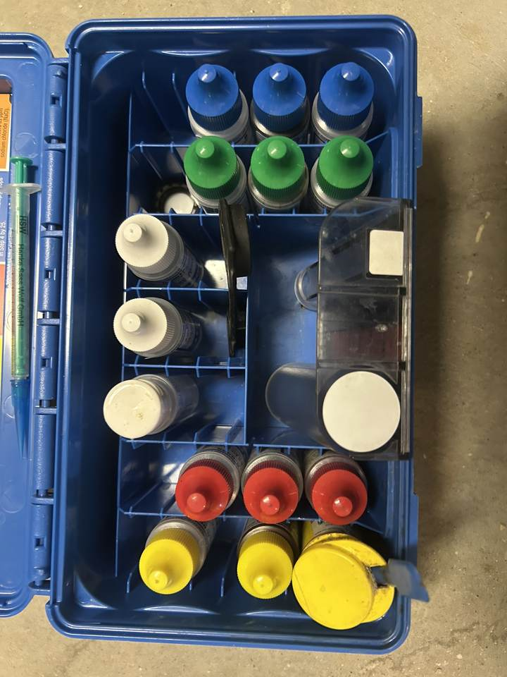
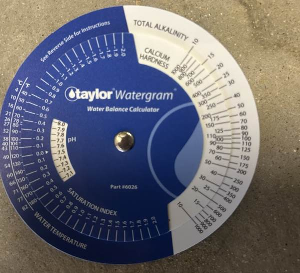

<!DOCTYPE html>
<html lang="en">
<head>
<meta charset="utf-8">
<meta name="viewport" content="width=device-width,initial-scale=1,viewport-fit=cover">
<meta name="theme-color" content="#0a6f78">
<meta name="apple-mobile-web-app-capable" content="yes">
<meta name="mobile-web-app-capable" content="yes">
<meta name="apple-mobile-web-app-status-bar-style" content="default">
<meta name="apple-mobile-web-app-title" content="Pool Test">
<meta name="description" content="Step-by-step guide for the Taylor K-2006 pool test kit, with a water-chemistry log.">
<link rel="manifest" href="manifest.webmanifest">
<link rel="icon" href="icons/icon-192.png" type="image/png">
<link rel="apple-touch-icon" href="icons/apple-touch-icon.png">
<!--APP-HEAD-START-->
<title>Pool Test Guide</title>
<meta name="claude:viewport-fit-sides" content="cover">
<link rel="preconnect" href="https://fonts.googleapis.com">
<link rel="preconnect" href="https://fonts.gstatic.com" crossorigin>
<link rel="stylesheet" href="https://fonts.googleapis.com/css2?family=Barlow+Semi+Condensed:wght@500;600;700&family=Inter:wght@400;500;600;700&display=swap">
<style>
/* Layout: one thumb-reach column. Each step = illustrated scene, the bottle to grab (kit map), one action, big bottom button.
   Color comes from the kit itself: Taylor cap colors (yellow chlorine, red pH, green alkalinity, blue calcium, white CYA) and the reagent colors. */
:root{
  --bg:#eef3f4; --surface:#ffffff; --sunk:#e3eaec; --ink:#0f1e23; --muted:#52646b; --line:#cfdadd;
  --accent:#0a6f78; --accent-ink:#ffffff; --accent-soft:#d4ecee;
  --ok:#17703f; --ok-bg:#dcf1e4; --warn:#9a5200; --warn-bg:#fbead2; --bad:#b0261d; --bad-bg:#f8dcd9;
  --glass:#f7fbfc; --glass-line:#7f959c; --water:#cfe9ef; --deck:#d9d3c7; --deck-line:#bdb5a6;
  --case:#2b62c0; --case-tray:#2453a6;
  --cap-yellow:#f2cf1d; --cap-red:#e0352d; --cap-green:#2fae4a; --cap-blue:#2f6fd6; --cap-white:#e8ecee;
  --font-display:"Barlow Semi Condensed","Arial Narrow",system-ui,sans-serif;
  --font-body:"Inter",system-ui,-apple-system,"Segoe UI",Roboto,sans-serif;
  --r:14px;
}
@media (prefers-color-scheme: dark){:root:not([data-theme="light"]){
  --bg:#091315; --surface:#11201f; --sunk:#0d1a1b; --ink:#e6f0f1; --muted:#93a8ad; --line:#22383a;
  --accent:#3bb8c2; --accent-ink:#04191b; --accent-soft:#123638;
  --ok:#5fd093; --ok-bg:#12301f; --warn:#f0b257; --warn-bg:#352611; --bad:#ff8a80; --bad-bg:#3a1714;
  --glass:#16282a; --glass-line:#7d979c; --water:#1f4650; --deck:#3a3732; --deck-line:#4d4942;
  --case:#2a5bb3; --case-tray:#1f4791;
  color-scheme:dark}}
:root[data-theme="dark"]{
  --bg:#091315; --surface:#11201f; --sunk:#0d1a1b; --ink:#e6f0f1; --muted:#93a8ad; --line:#22383a;
  --accent:#3bb8c2; --accent-ink:#04191b; --accent-soft:#123638;
  --ok:#5fd093; --ok-bg:#12301f; --warn:#f0b257; --warn-bg:#352611; --bad:#ff8a80; --bad-bg:#3a1714;
  --glass:#16282a; --glass-line:#7d979c; --water:#1f4650; --deck:#3a3732; --deck-line:#4d4942;
  --case:#2a5bb3; --case-tray:#1f4791;
  color-scheme:dark}
*{box-sizing:border-box}
[hidden]{display:none!important}
html,body{margin:0}
body{background:var(--bg);color:var(--ink);font:16px/1.5 var(--font-body);-webkit-text-size-adjust:100%;
  padding-left:max(16px,env(safe-area-inset-left,0px));padding-right:max(16px,env(safe-area-inset-right,0px));padding-block:0}
body::before{content:"";position:fixed;inset:0 0 auto;height:env(safe-area-inset-top,0px);z-index:10;background:var(--bg)}
button,input,textarea,select{font:inherit;color:inherit}
button{cursor:pointer}
:focus-visible{outline:3px solid var(--accent);outline-offset:2px}
.wrap{max-width:560px;margin:0 auto;padding-block:8px 132px}
h1,h2,h3{font-family:var(--font-display);text-wrap:balance;margin:0;line-height:1.1}
.top{position:sticky;top:env(safe-area-inset-top,0px);z-index:5;background:var(--bg);padding-block:12px 10px;display:flex;align-items:center;gap:10px}
.top h1{font-size:22px;font-weight:700;flex:1;min-width:0;white-space:nowrap;overflow:hidden;text-overflow:ellipsis}
.iconbtn{border:1px solid var(--line);background:var(--surface);border-radius:999px;height:40px;min-width:40px;padding:0 14px;font-weight:600;font-size:14px;display:inline-flex;align-items:center;gap:6px}
.eyebrow{font-size:12px;font-weight:700;letter-spacing:.09em;text-transform:uppercase;color:var(--muted)}
.muted{color:var(--muted)}
.small{font-size:14px}
.stack{display:flex;flex-direction:column;gap:14px}
.row{display:flex;gap:10px;flex-wrap:wrap;align-items:center}
.card{background:var(--surface);border:1px solid var(--line);border-radius:var(--r);padding:16px}
.btn{border:0;border-radius:12px;min-height:56px;padding:0 18px;font-weight:700;font-size:17px;background:var(--sunk);color:var(--ink);display:inline-flex;align-items:center;justify-content:center;gap:8px;text-align:center}
.btn.primary{background:var(--accent);color:var(--accent-ink)}
.btn.ghost{background:transparent;border:1px solid var(--line)}
.btn.danger{background:var(--bad-bg);color:var(--bad)}
.btn:disabled{opacity:.45;cursor:not-allowed}
.btn.block{width:100%}
.dock{position:fixed;left:0;right:0;bottom:0;z-index:6;background:var(--bg);border-top:1px solid var(--line);
  padding:12px max(16px,env(safe-area-inset-right,0px)) calc(12px + env(safe-area-inset-bottom,0px)) max(16px,env(safe-area-inset-left,0px))}
.dock .in{max-width:560px;margin:0 auto;display:flex;gap:10px}
.dock .in .btn{flex:1}
.dock .in .btn.back{flex:0 0 auto;min-width:84px}
.prog{height:6px;border-radius:6px;background:var(--sunk);overflow:hidden}
.prog>i{display:block;height:100%;background:var(--accent);transition:width .25s}
.stepmeta{display:flex;justify-content:space-between;gap:8px;margin-bottom:8px}
.step h2{font-size:30px;font-weight:700;margin-block:14px 8px}
.step .body{font-size:18px;line-height:1.5}
.step .body p{margin:0 0 10px}
/* scene */
.scene{position:relative;background:var(--surface);border:1px solid var(--line);border-radius:18px;margin-top:12px;overflow:hidden;display:flex;justify-content:center}
.scene svg{display:block;width:100%;max-width:100%;height:auto;max-height:260px}
.scene .count{position:absolute;right:12px;top:10px;font-family:var(--font-display);font-weight:700;font-size:20px;background:var(--bg);border:1px solid var(--line);border-radius:999px;padding:2px 12px;font-variant-numeric:tabular-nums}
.scene .count:empty{display:none}
.scene .replay{position:absolute;left:10px;bottom:10px;font-size:13px;font-weight:600;border:1px solid var(--line);background:var(--bg);border-radius:999px;padding:4px 10px}
.svgtext{font-family:var(--font-body);font-size:11px;font-weight:600;fill:var(--muted)}
.svgtext.strong{fill:var(--accent);font-weight:700}
.svgtext.onwater{fill:#ffffff}
.glass{fill:var(--glass);stroke:var(--glass-line);stroke-width:2}
.liquid{transition:fill .5s ease}
.fillup{transform-box:fill-box;transform-origin:50% 100%;animation:fillup 1.6s ease-out .2s both}
@keyframes fillup{from{transform:scaleY(0)}to{transform:scaleY(1)}}
.dropfall{animation:dropfall .55s ease-in forwards}
@keyframes dropfall{0%{transform:translateY(0);opacity:1}85%{opacity:1}100%{transform:translateY(var(--fall));opacity:0}}
.ripple{transform-box:fill-box;transform-origin:center;animation:ripple .5s ease-out forwards}
@keyframes ripple{from{transform:scale(.3);opacity:.9}to{transform:scale(1.6);opacity:0}}
.swirl{transform-box:view-box;transform-origin:100px 250px;animation:swirl 1.2s ease-in-out}
@keyframes swirl{0%,100%{transform:rotate(0)}25%{transform:rotate(-7deg)}50%{transform:rotate(6deg)}75%{transform:rotate(-4deg)}}
.scoop{transform-box:view-box;transform-origin:60px 60px}
.scoop.pour{animation:pour 1.1s ease-in-out}
@keyframes pour{0%,100%{transform:rotate(0)}45%,65%{transform:rotate(58deg)}}
.grain{animation:grain .7s ease-in both}
@keyframes grain{from{transform:translateY(0);opacity:1}to{transform:translateY(var(--fall));opacity:0}}
/* collect scene */
.waves{animation:waves 4s linear infinite}
@keyframes waves{from{transform:translateX(0)}to{transform:translateX(-80px)}}
.dip{animation:dip 6.5s ease-in-out infinite}
@keyframes dip{
  0%{transform:translate(170px,22px) rotate(0)}
  14%{transform:translate(170px,22px) rotate(180deg)}
  36%{transform:translate(170px,128px) rotate(180deg)}
  56%{transform:translate(170px,128px) rotate(0)}
  70%{transform:translate(170px,128px) rotate(0)}
  92%,100%{transform:translate(170px,22px) rotate(0)}}
.dipfill{animation:dipfill 6.5s ease-in-out infinite}
@keyframes dipfill{0%,44%{opacity:0}58%,100%{opacity:1}}
.bubbles{animation:bubbles 6.5s ease-out infinite}
@keyframes bubbles{0%,44%{opacity:0;transform:translateY(0)}50%{opacity:1}62%,100%{opacity:0;transform:translateY(-60px)}}
/* cya scenes */
.cyaw{transform-box:fill-box;transform-origin:50% 100%;animation:cyaw 7s ease-out infinite}
@keyframes cyaw{0%{transform:scaleY(0)}18%,100%{transform:scaleY(1)}}
.cyar{transform-box:fill-box;transform-origin:50% 100%;animation:cyar 7s ease-out infinite}
@keyframes cyar{0%,24%{transform:scaleY(0)}42%,100%{transform:scaleY(1)}}
.cloud{animation:cloud 7s ease infinite}
@keyframes cloud{0%,46%{opacity:0}56%,100%{opacity:1}}
.shake{transform-box:view-box;transform-origin:100px 150px;animation:shake 7s ease-in-out infinite}
@keyframes shake{0%,56%{transform:rotate(0)}60%{transform:rotate(-14deg)}64%{transform:rotate(14deg)}68%{transform:rotate(-14deg)}72%{transform:rotate(14deg)}76%{transform:rotate(-10deg)}80%,100%{transform:rotate(0)}}
.pourup{transform-box:fill-box;transform-origin:50% 100%;animation:pourup 6s ease-out infinite}
@keyframes pourup{0%{transform:scaleY(0)}70%,100%{transform:scaleY(1)}}
.dotfade{animation:dotfade 6s ease infinite}
@keyframes dotfade{0%,40%{opacity:1}68%,100%{opacity:0}}
.thermo{transform-box:fill-box;transform-origin:50% 100%;animation:fillup 2s ease-out .2s both}
.pulse{transform-box:fill-box;transform-origin:center;animation:pulse 1.4s ease-in-out infinite}
@keyframes pulse{0%,100%{transform:scale(1);opacity:.95}50%{transform:scale(1.18);opacity:.55}}
/* kit map */
.grab{display:flex;gap:12px;align-items:center;background:var(--surface);border:1px solid var(--line);border-radius:14px;padding:10px 12px;margin-top:10px}
.grab svg{flex:0 0 auto;width:86px;height:auto}
.grab .who{min-width:0;display:flex;flex-direction:column;gap:2px}
.grab .amt{font-family:var(--font-display);font-size:26px;font-weight:700;line-height:1}
.grab .code{font-weight:700;font-size:17px}
.grab .nm{font-size:14px;color:var(--muted)}
.capdot{display:inline-block;width:14px;height:14px;border-radius:50%;vertical-align:-2px;margin-right:6px;border:1px solid rgba(0,0,0,.25);flex:0 0 auto}
.kitmap .bot{transition:opacity .3s}
.kitmap.focus .bot{opacity:.28}
.kitmap.focus .bot.on{opacity:1}
.tip{border-radius:12px;padding:12px 14px;background:var(--accent-soft);font-size:15px;margin-top:14px}
.tip b{display:block;font-size:12px;letter-spacing:.08em;text-transform:uppercase;margin-bottom:2px}
.tip.warn{background:var(--warn-bg)}
.choices{display:flex;flex-direction:column;gap:10px;margin-top:14px}
.choice{display:flex;align-items:center;gap:14px;text-align:left;border:2px solid var(--line);background:var(--surface);border-radius:14px;padding:14px;min-height:64px;font-size:17px;font-weight:600}
.choice.sel{border-color:var(--accent);background:var(--accent-soft)}
.sw{width:34px;height:34px;border-radius:50%;border:1px solid rgba(0,0,0,.18);display:inline-block;flex:0 0 auto}
.sw.clear{background:repeating-linear-gradient(45deg,#ffffff 0 5px,#e9eef0 5px 10px)}
.counter{margin-top:14px;display:grid;grid-template-columns:1fr;gap:12px}
.tally{display:flex;align-items:baseline;justify-content:space-between;gap:10px;background:var(--surface);border:1px solid var(--line);border-radius:14px;padding:14px 16px}
.tally .n{font-family:var(--font-display);font-size:60px;font-weight:700;line-height:1;font-variant-numeric:tabular-nums}
.tally .n small{font-size:18px;font-weight:600;color:var(--muted);margin-left:6px}
.tally .v{text-align:right}
.tally .v .big{font-family:var(--font-display);font-size:34px;font-weight:700;color:var(--accent);font-variant-numeric:tabular-nums;line-height:1}
.drop{height:120px;border-radius:20px;border:0;background:var(--accent);color:var(--accent-ink);font-family:var(--font-display);font-size:34px;font-weight:700;touch-action:manipulation;user-select:none;-webkit-user-select:none;transition:transform .06s}
.drop:active{transform:scale(.98)}
.drop small{display:block;font-family:var(--font-body);font-size:14px;font-weight:600;opacity:.85}
.minor{display:flex;gap:10px}
.minor .btn{flex:1;min-height:48px;font-size:15px}
.picker{display:grid;grid-template-columns:repeat(3,minmax(0,1fr));gap:8px;margin-top:14px}
.pick{border:2px solid var(--line);background:var(--surface);border-radius:12px;padding:10px 4px 8px;display:flex;flex-direction:column;align-items:center;gap:6px;font-family:var(--font-display);font-size:22px;font-weight:700;font-variant-numeric:tabular-nums;min-height:76px;justify-content:center}
.pick .sw{width:30px;height:30px}
.pick.half{font-size:18px;min-height:50px;border-style:dashed;color:var(--muted)}
.pick.sel{border-color:var(--accent);background:var(--accent-soft);color:var(--ink)}
.pick.wide{grid-column:span 3;font-size:17px;min-height:52px}
.picker.p4{grid-template-columns:repeat(4,minmax(0,1fr))}
.picker.p4 .pick.wide{grid-column:span 2}
.subhead{margin-top:14px}
.field{display:flex;flex-direction:column;gap:6px}
.field label{font-weight:600;font-size:14px}
.input{border:1px solid var(--line);background:var(--surface);border-radius:10px;padding:12px;min-height:48px;width:100%;font-size:17px}
textarea.input{min-height:84px;resize:vertical}
.input.num{font-family:var(--font-display);font-size:26px;font-weight:700}
.toggles{display:flex;flex-wrap:wrap;gap:8px}
.tog{border:2px solid var(--line);background:var(--surface);border-radius:999px;padding:9px 14px;font-weight:600;font-size:15px;display:inline-flex;gap:8px;align-items:center}
.tog.on{border-color:var(--accent);background:var(--accent-soft)}
.tog.locked{opacity:.8;cursor:default}
.tog .chk{width:18px;height:18px;border-radius:5px;border:2px solid var(--muted);display:inline-grid;place-items:center;font-size:12px;line-height:1}
.tog.on .chk{background:var(--accent);border-color:var(--accent);color:var(--accent-ink)}
/* log form (mirrors the facility's pool log) */
.logform{display:flex;flex-direction:column;background:var(--surface);border:1px solid var(--line);border-radius:16px;overflow:hidden}
.lrow{display:grid;grid-template-columns:minmax(0,1fr) auto;gap:4px 12px;align-items:center;padding:12px 14px;border-top:1px solid var(--line)}
.lrow:first-child{border-top:0}
.lrow .lab{font-weight:600;font-size:16px}
.lrow .lab .req{color:var(--bad);margin-left:3px}
.lrow .ideal{grid-column:1;font-size:13px;color:var(--muted)}
.lrow .val{grid-row:1 / span 2;grid-column:2;text-align:right;display:flex;flex-direction:column;align-items:flex-end;gap:4px}
.lrow .num{font-family:var(--font-display);font-size:32px;font-weight:700;line-height:1;font-variant-numeric:tabular-nums}
.lrow .num.empty{color:var(--muted);font-size:20px}
.lrow input{width:104px;text-align:right}
.pill{display:inline-flex;align-items:center;gap:5px;border-radius:999px;padding:2px 9px;font-size:12px;font-weight:700;letter-spacing:.02em}
.pill.ok{background:var(--ok-bg);color:var(--ok)}
.pill.warn{background:var(--warn-bg);color:var(--warn)}
.pill.bad{background:var(--bad-bg);color:var(--bad)}
.extra{display:grid;grid-template-columns:repeat(2,minmax(0,1fr));gap:10px}
.res{background:var(--surface);border:1px solid var(--line);border-radius:14px;padding:12px 14px;display:flex;flex-direction:column;gap:2px;min-width:0}
.res .k{font-size:13px;font-weight:600;color:var(--muted)}
.res .v{font-family:var(--font-display);font-size:30px;font-weight:700;line-height:1.05;font-variant-numeric:tabular-nums}
.res .v small{font-size:15px;font-weight:600;color:var(--muted);margin-left:4px}
.results{display:grid;grid-template-columns:repeat(3,minmax(0,1fr));gap:10px}
.results .res .v{font-size:28px}
.hist{display:flex;flex-direction:column;gap:10px}
.hitem{display:flex;flex-direction:column;gap:8px;text-align:left;background:var(--surface);border:1px solid var(--line);border-radius:14px;padding:12px 14px;width:100%}
.hitem .h{display:flex;justify-content:space-between;gap:8px;font-weight:700}
.hitem .h span:last-child{font-weight:500;color:var(--muted);font-size:14px;white-space:nowrap}
.chips{display:flex;flex-wrap:wrap;gap:6px}
.chip{font-size:13px;font-weight:600;border-radius:8px;padding:3px 8px;background:var(--sunk);font-variant-numeric:tabular-nums}
.chip.warn{background:var(--warn-bg);color:var(--warn)}
.chip.bad{background:var(--bad-bg);color:var(--bad)}
.example{opacity:.7;border-style:dashed}
.kitpick{display:grid;gap:10px}
.kitopt{text-align:left;border:2px solid var(--line);background:var(--surface);border-radius:14px;padding:14px;display:flex;flex-direction:column;gap:4px}
.kitopt.sel{border-color:var(--accent);background:var(--accent-soft)}
.kitopt strong{font-family:var(--font-display);font-size:22px}
.hero{border-radius:18px;background:var(--surface);border:1px solid var(--line);overflow:hidden}
.hero .pool svg{display:block;width:100%;height:auto}
.hero .in{padding:16px;display:flex;flex-direction:column;gap:12px}
.hero h2{font-size:30px}
.legend{display:grid;gap:10px;font-size:15px}
.legend>span{display:flex;align-items:flex-start;gap:10px}
.legend .capdot{width:18px;height:18px;margin:2px 0 0}
.photo{width:100%;border-radius:14px;border:1px solid var(--line);display:block}
.dl{display:grid;grid-template-columns:auto 1fr;gap:6px 14px;font-size:15px}
.dl dt{color:var(--muted)}
.dl dd{margin:0;font-weight:600;text-align:right;font-variant-numeric:tabular-nums;min-width:0;overflow-wrap:anywhere}
.ranges{display:grid;grid-template-columns:1fr 80px 80px;gap:8px;align-items:center}
.ranges .input{padding:8px;min-height:40px;text-align:center}
.toast{position:fixed;left:50%;transform:translateX(-50%);bottom:calc(96px + env(safe-area-inset-bottom,0px));background:var(--ink);color:var(--bg);padding:10px 16px;border-radius:999px;font-weight:600;z-index:20;font-size:15px;max-width:calc(100% - 32px)}
.confirm{border:2px solid var(--bad);background:var(--bad-bg);border-radius:14px;padding:14px;display:flex;flex-direction:column;gap:10px}
.copybox{width:100%;min-height:160px;font:13px/1.45 ui-monospace,Menlo,Consolas,monospace}
@media (prefers-reduced-motion: reduce){*,*::before,*::after{animation:none!important;transition:none!important}}
</style>
<!--APP-HEAD-END-->
</head>
<body>
<!--APP-BODY-START-->
<div class="wrap" id="app"></div>
<div class="dock" id="dock" hidden><div class="in" id="dockIn"></div></div>
<div class="toast" id="toast" hidden></div>
<script>
(function(){
'use strict';

/* ================= storage ================= */
var KEY='taylorPoolGuide.v1', SETTINGS_VERSION=2;
var DEF_RANGES={fc:[1,3],cc:[0,0.2],ph:[7.2,7.8],ta:[80,120],ch:[200,400],cya:[30,50],phos:[0,100],lsi:[-0.3,0.3]};
var DEF={
  settings:{v:SETTINGS_VERSION,kit:'K2006',fasSample:25,chSample:10,locations:{},initials:'',facility:'',pools:['Pool','Spa'],spaAdded:true,
    ranges:JSON.parse(JSON.stringify(DEF_RANGES)),
    lastTests:{ta:true,ch:true,cya:true,demand:false},lastPool:'Pool'},
  history:[],current:null
};
function clone(o){return JSON.parse(JSON.stringify(o))}
function load(){
  var d=clone(DEF);
  try{var raw=localStorage.getItem(KEY);if(raw){var p=JSON.parse(raw),ps=p.settings||{};
    d.settings=Object.assign(d.settings,ps);
    if(!ps.v||ps.v<SETTINGS_VERSION){ /* new defaults matched to the facility log */
      d.settings.ranges=clone(DEF_RANGES);d.settings.lastTests=clone(DEF.settings.lastTests);d.settings.v=SETTINGS_VERSION;
      if(!d.settings.kit)d.settings.kit='K2006';
    }else{
      d.settings.ranges=Object.assign(clone(DEF_RANGES),ps.ranges||{});
      d.settings.lastTests=Object.assign(clone(DEF.settings.lastTests),ps.lastTests||{});
    }
    /* make sure the spa is a choice once; if it's removed later in Settings it stays removed */
    if(!ps.spaAdded){if(!d.settings.pools.some(function(x){return /spa/i.test(x)}))d.settings.pools.push('Spa');d.settings.spaAdded=true}
    d.history=Array.isArray(p.history)?p.history:[];d.current=p.current||null;
    if(d.current&&!d.current.extra)d.current.extra={};}}catch(e){}
  return d;
}
var db=load();
function save(){try{localStorage.setItem(KEY,JSON.stringify(db))}catch(e){}}

/* ================= helpers ================= */
var app=document.getElementById('app'),dock=document.getElementById('dock'),dockIn=document.getElementById('dockIn');
var reduceMotion=false;try{reduceMotion=window.matchMedia('(prefers-reduced-motion: reduce)').matches}catch(e){}
function esc(s){return String(s==null?'':s).replace(/[&<>"']/g,function(c){return{'&':'&amp;','<':'&lt;','>':'&gt;','"':'&quot;',"'":'&#39;'}[c]})}
function fmt(n,d){if(n==null||isNaN(n))return '—';return Number(n).toFixed(d==null?1:d)}
function round(n,d){var m=Math.pow(10,d);return Math.round(n*m)/m}
var toastT;
function toast(msg){var t=document.getElementById('toast');t.textContent=msg;t.hidden=false;clearTimeout(toastT);toastT=setTimeout(function(){t.hidden=true},2200)}
function buzz(){try{navigator.vibrate&&navigator.vibrate(12)}catch(e){}}
var wake=null;
function keepAwake(on){
  try{
    if(on&&!wake&&navigator.wakeLock){navigator.wakeLock.request('screen').then(function(w){wake=w;w.addEventListener('release',function(){wake=null})}).catch(function(){})}
    if(!on&&wake){wake.release().catch(function(){});wake=null}
  }catch(e){}
}
document.addEventListener('visibilitychange',function(){if(document.visibilityState==='visible'&&db.current)keepAwake(true)});
function setDock(html){if(!html){dock.hidden=true;dockIn.innerHTML='';return}dock.hidden=false;dockIn.innerHTML=html}
function copyText(text,okMsg,fallbackEl){
  function fb(){if(fallbackEl){fallbackEl.hidden=false;fallbackEl.value=text;fallbackEl.focus();fallbackEl.select();toast('Select all and copy')}}
  try{if(navigator.clipboard&&navigator.clipboard.writeText){navigator.clipboard.writeText(text).then(function(){toast(okMsg||'Copied')},fb);return}}catch(e){}
  fb();
}
var SVGNS='http://www.w3.org/2000/svg';

/* ================= colors ================= */
var C={pink:'#e989b3',pinkLight:'#f4bfd5',taGreen:'#3fa35f',taRed:'#d6453d',chRed:'#a92b5d',chBlue:'#2f6fd0',cloudy:'#d3d7cf',phOrange:'#e6764d'};
var DPD_PINK={0:'clear',0.5:'#f9dbe7',1:'#f4bfd5',1.5:'#efa4c4',2:'#e989b3',2.5:'#e3739f',3:'#dc5f95',4:'#d2468a',5:'#c4317b'};
var PH_RED={6.8:'#f0c33b',7:'#efab3e',7.2:'#ec9145',7.4:'#e6764d',7.6:'#dd5c56',7.8:'#d0435f',8:'#bf2f6a',8.2:'#a72274'};
function sw(c){return c==='clear'?'<span class="sw clear" aria-hidden="true"></span>':'<span class="sw" style="background:'+c+'" aria-hidden="true"></span>'}
function nearestColor(map,v){var best=null,bd=1e9;Object.keys(map).forEach(function(k){var d=Math.abs(parseFloat(k)-v);if(d<bd){bd=d;best=map[k]}});return best}

/* ================= kit ================= */
var KITS={
  K2006:{name:'K-2006',full:'Taylor K-2006 · FAS-DPD',how:'Chlorine by drop count: add powder, turn it pink, count drops until it goes clear.'},
  K2005:{name:'K-2005',full:'Taylor K-2005 · DPD',how:'Chlorine by color match: add drops, compare the pink to the comparator block.'}
};
/* cap colors in the K-2006 case, grouped by test */
var GROUPS={
  yellow:{name:'Yellow caps',test:'Chlorine',col:'var(--cap-yellow)'},
  red:{name:'Red caps',test:'pH',col:'var(--cap-red)'},
  green:{name:'Green caps',test:'Total alkalinity',col:'var(--cap-green)'},
  blue:{name:'Blue caps',test:'Calcium hardness',col:'var(--cap-blue)'},
  white:{name:'White caps',test:'Cyanuric acid (CYA)',col:'var(--cap-white)'}
};
var CAP={'R-0870':'yellow','R-0871':'yellow','R-0003':'yellow','R-0004':'red','R-0005':'red','R-0006':'red',
  'R-0007':'green','R-0008':'green','R-0009':'green','R-0010':'blue','R-0011L':'blue','R-0012':'blue','R-0013':'white'};

/* Top-down map of the open K-2006 case, laid out like the real tray. */
function kitMap(group,code,opts){
  opts=opts||{};
  function cap(g,x,y,r,cls){
    var on=g===group, ring=on?'<circle class="pulse" cx="'+x+'" cy="'+y+'" r="'+(r+5)+'" fill="none" stroke="#ffffff" stroke-width="3"/>':'';
    return '<g class="bot'+(on?' on':'')+'">'+ring+'<circle cx="'+x+'" cy="'+y+'" r="'+r+'" fill="'+GROUPS[g].col+'" stroke="rgba(0,0,0,.35)" stroke-width="1.2"/>'+
      (cls==='jar'||cls==='flat'?'<circle cx="'+x+'" cy="'+y+'" r="'+(r*0.72)+'" fill="none" stroke="rgba(0,0,0,.18)" stroke-width="1"/>':'<circle cx="'+x+'" cy="'+y+'" r="'+(r*0.42)+'" fill="'+GROUPS[g].col+'" stroke="rgba(0,0,0,.3)" stroke-width="1"/><circle cx="'+x+'" cy="'+y+'" r="1.6" fill="rgba(0,0,0,.45)"/>')+'</g>';
  }
  var s='<svg class="kitmap'+(group||opts.comp?' focus':'')+'" viewBox="0 0 200 290" role="img" aria-label="Open K-2006 case'+(group?', '+GROUPS[group].name.toLowerCase()+' highlighted':'')+'">'+
    '<rect x="4" y="4" width="192" height="282" rx="18" fill="var(--case)"/>'+
    '<rect x="14" y="14" width="172" height="262" rx="12" fill="var(--case-tray)"/>';
  [74,114,154].forEach(function(x){s+=cap('blue',x,34,15)});
  [74,114,154].forEach(function(x){s+=cap('green',x,70,15)});
  s+=cap('white',38,108,15)+cap('white',38,146,15)+cap('white',38,186,17,'flat');
  s+='<g class="bot'+(opts.comp?' on':'')+'">'+(opts.comp?'<rect class="pulse" x="112" y="88" width="62" height="114" rx="10" fill="none" stroke="#ffffff" stroke-width="3"/>':'')+
    '<rect x="116" y="92" width="54" height="106" rx="7" fill="rgba(255,255,255,.28)" stroke="rgba(255,255,255,.6)" stroke-width="1.2"/><rect x="146" y="100" width="18" height="18" rx="2" fill="#f2f2ef"/><circle cx="152" cy="178" r="15" fill="#f2f2ef"/><rect x="92" y="164" width="40" height="28" rx="12" fill="rgba(255,255,255,.22)" stroke="rgba(255,255,255,.5)"/></g>';
  [70,110,150].forEach(function(x){s+=cap('red',x,226,15)});
  s+=cap('yellow',56,262,15)+cap('yellow',96,262,15)+cap('yellow',148,262,20,'jar');
  s+='</svg>';
  return s;
}

function grabHTML(list,kit){
  if(!list||!list.length)return '';
  return list.map(function(x){
    var g=CAP[x.code],showMap=kit==='K2006'&&g;
    var amt=x.unit==='at a time'?'One drop at a time':(x.amt==='to'?'Fill to the '+x.unit:x.amt+' '+x.unit);
    return '<div class="grab">'+(showMap?kitMap(g,x.code):'')+'<div class="who">'+
      (showMap?'<span class="eyebrow"><span class="capdot" style="background:'+GROUPS[g].col+'"></span>'+GROUPS[g].name+'</span>':'')+
      '<span class="code">'+x.code+'</span><span class="nm">'+x.name+'</span><span class="amt">'+amt+'</span></div></div>';
  }).join('');
}

/* ================= scenes (SVG illustrations) ================= */
/* Sample tube geometry: viewBox 0 0 200 260. Interior x 82..118, bottom 246. Marks: 25 mL y=128, 10 mL y=196. */
var TUBE={x0:82,x1:118,top:98,bot:246,y25:128,y10:196};
function liquidColor(c){return !c||c==='water'||c==='clear'?'var(--water)':c}
function bottleSVG(capColor){
  /* dropper bottle held straight up and down, tip pointing at the sample */
  return '<g><rect x="80" y="2" width="40" height="44" rx="8" fill="var(--glass)" stroke="var(--glass-line)" stroke-width="2"/>'+
    '<path d="M84 46h32l-6 18h-20z" fill="'+capColor+'" stroke="rgba(0,0,0,.35)" stroke-width="1.2"/>'+
    '<path d="M96 64h8l-2 10h-4z" fill="'+capColor+'" stroke="rgba(0,0,0,.35)" stroke-width="1"/></g>';
}
function tubeSVG(o){
  var lvlY=o.ml===10?TUBE.y10:TUBE.y25, color=liquidColor(o.liquid);
  var s='<svg viewBox="0 0 200 260" role="img" aria-label="'+esc(o.aria||'Sample tube')+'">';
  s+='<defs><clipPath id="tubeClip"><path d="M'+TUBE.x0+' '+TUBE.top+'V'+(TUBE.bot-18)+'a18 18 0 0 0 36 0V'+TUBE.top+'z"/></clipPath></defs>';
  if(o.bottle)s+=bottleSVG(o.bottle);
  if(o.scoop)s+='<g><rect x="4" y="80" width="44" height="34" rx="6" fill="var(--cap-yellow)" stroke="rgba(0,0,0,.3)"/><text x="26" y="101" text-anchor="middle" class="svgtext" style="fill:#3a3000">R-0870</text></g>'+
    '<g id="scoopG" class="scoop"><rect x="24" y="52" width="40" height="7" rx="3.5" fill="#cfd5d8" stroke="var(--glass-line)"/><path d="M60 48h18a6 6 0 0 1 0 14H60z" fill="#e7ebed" stroke="var(--glass-line)"/><path d="M64 51h12" stroke="#f5f0e4" stroke-width="4" stroke-linecap="round"/></g>';
  s+='<g id="tubeG">';
  s+='<path d="M'+(TUBE.x0-4)+' '+(TUBE.top-6)+'h44" stroke="var(--glass-line)" stroke-width="3" stroke-linecap="round"/>';
  s+='<path class="glass" d="M'+TUBE.x0+' '+TUBE.top+'V'+(TUBE.bot-18)+'a18 18 0 0 0 36 0V'+TUBE.top+'"/>';
  s+='<g clip-path="url(#tubeClip)"><rect id="liq" class="liquid'+(o.fill?' fillup':'')+'" x="'+TUBE.x0+'" y="'+lvlY+'" width="36" height="'+(TUBE.bot-lvlY+2)+'" fill="'+color+'"/></g>';
  [['25 mL',TUBE.y25,25],['10 mL',TUBE.y10,10]].forEach(function(m){
    var target=o.mark&&o.ml===m[2];
    s+='<path d="M'+(TUBE.x1-10)+' '+m[1]+'h14" stroke="'+(target?'var(--accent)':'var(--glass-line)')+'" stroke-width="'+(target?3:1.6)+'"/>'+
      '<text x="'+(TUBE.x1+10)+'" y="'+(m[1]+4)+'" class="svgtext'+(target?' strong':'')+'">'+m[0]+(target?' ← fill to here':'')+'</text>';
  });
  s+='</g><g id="fx"></g>';
  s+='</svg>';
  return s;
}
function collectSVG(){
  return '<svg viewBox="0 0 340 230" role="img" aria-label="Turn the tube upside down, push it to elbow depth, turn it upright to fill, lift it out">'+
    '<defs><linearGradient id="pw" x1="0" y1="0" x2="0" y2="1"><stop offset="0" stop-color="#5cc3d6"/><stop offset="1" stop-color="#1b6f8c"/></linearGradient>'+
    '<clipPath id="poolClip"><rect x="0" y="48" width="340" height="182"/></clipPath></defs>'+
    '<rect x="0" y="0" width="340" height="44" fill="var(--deck)"/><rect x="0" y="40" width="340" height="8" fill="var(--deck-line)"/>'+
    '<rect x="0" y="48" width="340" height="182" fill="url(#pw)"/>'+
    '<g clip-path="url(#poolClip)"><path class="waves" d="M0 58 q20 -8 40 0 t40 0 t40 0 t40 0 t40 0 t40 0 t40 0 t40 0 t40 0 t40 0 t40 0 V230 H0z" fill="rgba(255,255,255,.13)"/></g>'+
    '<rect x="0" y="62" width="14" height="22" rx="3" fill="#cfd8db"/><circle cx="14" cy="73" r="5" fill="#8fa3a8"/>'+
    '<text x="22" y="96" class="svgtext onwater">return jet: stay away</text>'+
    '<path d="M110 152 H330" stroke="#ffffff" stroke-width="1.5" stroke-dasharray="5 5" opacity=".8"/>'+
    '<text x="330" y="172" text-anchor="end" class="svgtext onwater">elbow depth ≈ 18 in</text>'+
    '<g class="dip"><g transform="translate(0,-38)"><rect x="-13" y="0" width="26" height="76" rx="12" fill="rgba(255,255,255,.75)" stroke="#e8f3f5" stroke-width="2"/>'+
    '<rect class="dipfill" x="-10" y="10" width="20" height="63" rx="9" fill="#9bd6e3"/><path d="M-16 0h32" stroke="#e8f3f5" stroke-width="3" stroke-linecap="round"/></g></g>'+
    '<g class="bubbles"><circle cx="164" cy="150" r="3" fill="#fff" opacity=".8"/><circle cx="176" cy="160" r="2.4" fill="#fff" opacity=".8"/><circle cx="170" cy="140" r="2" fill="#fff" opacity=".8"/></g>'+
    '<text x="12" y="30" class="svgtext">1. flip upside down  2. push down  3. turn upright  4. lift out</text>'+
    '</svg>';
}
function comparatorSVG(o){
  /* pH comparator: sample cell in the middle, color standards on both sides */
  var vals=o.vals,sel=o.sel,half=Math.ceil(vals.length/2),hgt=130/half;
  var s='<svg viewBox="0 0 260 240" role="img" aria-label="pH comparator">';
  if(o.bottle)s+='<g transform="translate(30,0)">'+bottleSVG(o.bottle)+'</g>';
  s+='<rect x="22" y="86" width="216" height="148" rx="14" fill="var(--glass)" stroke="var(--glass-line)" stroke-width="2"/>';
  vals.forEach(function(v,i){
    var col=i<half?0:1,row=i<half?i:i-half,x=col?176:56,y=96+row*hgt;
    var c=PH_RED[parseFloat(v)]||'#ccc',on=sel===v;
    s+='<rect x="'+x+'" y="'+y+'" width="28" height="'+(hgt-8)+'" rx="5" fill="'+c+'" stroke="'+(on?'var(--accent)':'rgba(0,0,0,.2)')+'" stroke-width="'+(on?3:1)+'"/>'+
      '<text x="'+(col?x+33:x-5)+'" y="'+(y+(hgt-8)/2+4)+'" text-anchor="'+(col?'start':'end')+'" class="svgtext'+(on?' strong':'')+'">'+v+'</text>';
  });
  s+='<defs><clipPath id="cellClip"><rect x="108" y="96" width="44" height="130" rx="8"/></clipPath></defs>';
  s+='<rect x="108" y="96" width="44" height="130" rx="8" class="glass"/>';
  s+='<g clip-path="url(#cellClip)"><rect id="liq" class="liquid'+(o.fill?' fillup':'')+'" x="108" y="104" width="44" height="124" fill="'+liquidColor(o.liquid)+'"/></g>';
  s+='<path d="M104 104h52" stroke="'+(o.mark?'var(--accent)':'var(--glass-line)')+'" stroke-width="'+(o.mark?3:1.5)+'"/>';
  if(o.mark)s+='<text x="130" y="80" text-anchor="middle" class="svgtext strong">fill line ↓</text>';
  s+='<g id="fx"></g></svg>';
  return s;
}
function cyaMixSVG(){
  return '<svg viewBox="0 0 280 250" role="img" aria-label="Fill the mixing bottle with pool water to the lower mark, R-0013 to the upper mark, then shake">'+
    '<defs><clipPath id="mbClip"><rect x="62" y="62" width="76" height="174" rx="16"/></clipPath></defs>'+
    '<g class="shake"><rect x="84" y="36" width="32" height="28" rx="5" fill="var(--cap-white)" stroke="var(--glass-line)" stroke-width="2"/>'+
    '<rect x="62" y="62" width="76" height="174" rx="16" class="glass"/>'+
    '<g clip-path="url(#mbClip)"><rect class="cyar" x="62" y="104" width="76" height="134" fill="#e2e4dc"/>'+
    '<rect class="cyaw" x="62" y="168" width="76" height="70" fill="var(--water)"/>'+
    '<rect class="cloud" x="62" y="104" width="76" height="134" fill="'+C.cloudy+'"/></g>'+
    '<path d="M126 168h16M126 104h16" stroke="var(--accent)" stroke-width="3"/></g>'+
    '<text x="146" y="172" class="svgtext strong">lower mark: pool water</text>'+
    '<text x="146" y="108" class="svgtext strong">upper mark: R-0013</text>'+
    '<text x="146" y="214" class="svgtext">then shake 30 sec</text>'+
    '</svg>';
}
function cyaPourSVG(){
  var marks=[[100,214],[90,200],[80,186],[70,170],[60,154],[50,136],[40,116],[30,92],[20,64]];
  var s='<svg viewBox="0 0 220 250" role="img" aria-label="Pour the cloudy sample into the view tube while looking down at the black dot">'+
    '<defs><clipPath id="vtClip"><rect x="84" y="40" width="44" height="196" rx="6"/></clipPath></defs>'+
    '<g><ellipse cx="106" cy="16" rx="14" ry="8" fill="none" stroke="var(--ink)" stroke-width="2"/><circle cx="106" cy="16" r="4" fill="var(--ink)"/><path d="M106 28v8" stroke="var(--ink)" stroke-width="2" stroke-dasharray="2 3"/></g>'+
    '<rect x="84" y="40" width="44" height="196" rx="6" class="glass"/>'+
    '<g clip-path="url(#vtClip)"><rect class="pourup" x="84" y="110" width="44" height="128" fill="'+C.cloudy+'" opacity=".92"/></g>'+
    '<ellipse class="dotfade" cx="106" cy="230" rx="9" ry="3.6" fill="#111"/>';
  marks.forEach(function(m){s+='<path d="M128 '+m[1]+'h8" stroke="var(--glass-line)" stroke-width="1.5"/><text x="140" y="'+(m[1]+4)+'" class="svgtext">'+m[0]+'</text>'});
  s+='<text x="76" y="150" text-anchor="end" class="svgtext strong">stop when</text><text x="76" y="164" text-anchor="end" class="svgtext strong">the dot is gone</text>';
  return s+'</svg>';
}
function thermoSVG(){
  return '<svg viewBox="0 0 220 190" role="img" aria-label="Pool thermometer in the water">'+
    '<defs><linearGradient id="pw2" x1="0" y1="0" x2="0" y2="1"><stop offset="0" stop-color="#5cc3d6"/><stop offset="1" stop-color="#1b6f8c"/></linearGradient></defs>'+
    '<rect x="0" y="0" width="220" height="60" fill="var(--deck)"/><rect x="0" y="60" width="220" height="130" fill="url(#pw2)"/><rect x="0" y="56" width="220" height="8" fill="var(--deck-line)"/>'+
    '<path d="M110 20v62" stroke="var(--glass-line)" stroke-width="2"/>'+
    '<rect x="96" y="80" width="28" height="100" rx="14" fill="var(--glass)" stroke="var(--glass-line)" stroke-width="2"/>'+
    '<rect class="thermo" x="106" y="100" width="8" height="66" rx="4" fill="#d6453d"/><circle cx="110" cy="166" r="9" fill="#d6453d"/>'+
    '<text x="134" y="110" class="svgtext onwater">leave it in</text><text x="134" y="124" class="svgtext onwater">1–2 minutes</text></svg>';
}
function poolHeroSVG(){
  return '<svg viewBox="0 0 400 130" role="img" aria-label="Swimming pool">'+
    '<defs><linearGradient id="ph" x1="0" y1="0" x2="0" y2="1"><stop offset="0" stop-color="#63c8da"/><stop offset="1" stop-color="#1c7392"/></linearGradient>'+
    '<clipPath id="phc"><rect x="0" y="0" width="400" height="130"/></clipPath></defs>'+
    '<rect width="400" height="130" fill="url(#ph)"/>'+
    '<g clip-path="url(#phc)">'+[34,74,114].map(function(y){return '<path d="M0 '+y+' H400" stroke="#1a5f7a" stroke-width="5" stroke-dasharray="14 10" opacity=".5"/>'}).join('')+
    '<path class="waves" d="M0 18 q20 -10 40 0 t40 0 t40 0 t40 0 t40 0 t40 0 t40 0 t40 0 t40 0 t40 0 t40 0 t40 0 V130 H0z" fill="rgba(255,255,255,.12)"/>'+
    '<path class="waves" style="animation-duration:6s" d="M0 64 q20 -9 40 0 t40 0 t40 0 t40 0 t40 0 t40 0 t40 0 t40 0 t40 0 t40 0 t40 0 t40 0 V130 H0z" fill="rgba(255,255,255,.08)"/></g>'+
    '<g transform="translate(298,18)"><rect x="0" y="0" width="22" height="90" rx="11" fill="rgba(255,255,255,.82)" stroke="#e8f3f5" stroke-width="2"/><rect x="3" y="44" width="16" height="43" rx="8" fill="'+C.pink+'"/></g>'+
    '<g transform="translate(334,8)"><path d="M10 0 C10 0 0 12 0 18 a10 10 0 0 0 20 0 C20 12 10 0 10 0z" fill="'+C.pink+'"/></g>'+
    '</svg>';
}

/* scene runtime: counts drops and dippers for you, plays a drop on every tap */
var sceneTimers=[];
function clearScene(){sceneTimers.forEach(function(t){clearTimeout(t)});sceneTimers=[]}
function after(ms,fn){var t=setTimeout(fn,ms);sceneTimers.push(t);return t}
function spawnDrop(color,fromX,fromY,toY){
  var fx=document.getElementById('fx');if(!fx)return;
  var p=document.createElementNS(SVGNS,'path');
  p.setAttribute('d','M'+fromX+' '+fromY+' c0 0 -4.5 6 -4.5 9 a4.5 4.5 0 0 0 9 0 c0 -3 -4.5 -9 -4.5 -9z');
  p.setAttribute('fill',color);p.setAttribute('stroke','rgba(0,0,0,.25)');
  p.style.setProperty('--fall',(toY-fromY-8)+'px');p.setAttribute('class','dropfall');
  fx.appendChild(p);
  setTimeout(function(){p.remove();if(!fx.isConnected)return;var r=document.createElementNS(SVGNS,'ellipse');r.setAttribute('cx',fromX);r.setAttribute('cy',toY);r.setAttribute('rx',9);r.setAttribute('ry',3);r.setAttribute('fill','none');r.setAttribute('stroke',color);r.setAttribute('stroke-width',2);r.setAttribute('class','ripple');fx.appendChild(r);setTimeout(function(){r.remove()},520)},560);
}
function swirlTube(){var g=document.getElementById('tubeG');if(!g)return;g.classList.remove('swirl');void g.getBoundingClientRect();g.classList.add('swirl')}
function sceneTarget(sc){return sc.kind==='comp'?{x:130,y:104}:{x:100,y:sc.ml===10?TUBE.y10:TUBE.y25}}
function runScene(sc){
  clearScene();if(!sc)return;
  var countEl=document.getElementById('sceneCount'),liq=document.getElementById('liq'),target=sceneTarget(sc);
  if(sc.drops){
    var n=sc.drops,dropColor=sc.dropColor||'rgba(235,240,242,.95)';
    if(reduceMotion){if(countEl)countEl.textContent=n+' drops';if(liq&&sc.after)liq.setAttribute('fill',liquidColor(sc.after));return}
    var loop=function(){
      var i=0;if(liq)liq.setAttribute('fill',liquidColor(sc.liquid));if(countEl)countEl.textContent='0 of '+n;
      var tick=function(){
        i++;var me=i;spawnDrop(dropColor,target.x,76,target.y);
        after(560,function(){if(countEl)countEl.textContent=me+' of '+n+(me===n?' ✓':'');if(me===n&&sc.after&&liq)liq.setAttribute('fill',liquidColor(sc.after))});
        if(i<n)after(n>10?520:720,tick);else after(1300,function(){if(sc.kind!=='comp')swirlTube();after(2600,loop)});
      };
      after(500,tick);
    };
    loop();
  }
  if(sc.powder){
    var m=sc.powder,scoop=document.getElementById('scoopG');
    if(reduceMotion){if(countEl)countEl.textContent=m+' dippers';if(liq)liq.setAttribute('fill',liquidColor(sc.after));return}
    var ploop=function(){
      var j=0;if(liq)liq.setAttribute('fill',liquidColor(sc.liquid));if(countEl)countEl.textContent='0 of '+m;
      var tk=function(){
        j++;var me=j;if(scoop){scoop.classList.remove('pour');void scoop.getBoundingClientRect();scoop.classList.add('pour')}
        after(480,function(){
          var fx=document.getElementById('fx');if(!fx)return;
          for(var k=0;k<8;k++){var c=document.createElementNS(SVGNS,'circle');c.setAttribute('cx',92+Math.random()*16);c.setAttribute('cy',84+Math.random()*6);c.setAttribute('r',1.8);c.setAttribute('fill','#f5f0e4');c.setAttribute('stroke','rgba(0,0,0,.25)');c.style.setProperty('--fall',(target.y-86)+'px');c.style.animationDelay=(k*45)+'ms';c.setAttribute('class','grain');fx.appendChild(c);(function(cc){setTimeout(function(){cc.remove()},1000)})(c)}
        });
        after(1200,function(){if(countEl)countEl.textContent=me+' of '+m+(me===m?' ✓':'');if(me===m&&liq){liq.setAttribute('fill',liquidColor(sc.after));swirlTube()}});
        if(j<m)after(1500,tk);else after(4200,ploop);
      };
      after(500,tk);
    };
    ploop();
  }
}
function tapDrop(sc){var t=sceneTarget(sc);spawnDrop(sc.dropColor||'rgba(235,240,242,.95)',t.x,76,t.y);after(600,swirlTube)}
function sceneHTML(sc){
  if(!sc)return '';
  var inner,count='';
  if(sc.kind==='collect')inner=collectSVG();
  else if(sc.kind==='thermo')inner=thermoSVG();
  else if(sc.kind==='cyamix')inner=cyaMixSVG();
  else if(sc.kind==='cyapour')inner=cyaPourSVG();
  else if(sc.kind==='comp')inner=comparatorSVG(sc);
  else inner=tubeSVG(sc);
  if(sc.drops||sc.powder)count='<span class="count" id="sceneCount"></span><button class="replay" id="replay" type="button">Replay</button>';
  return '<div class="scene">'+inner+count+'</div>';
}

/* ================= step definitions ================= */
function R(code,name,amt,unit){return{code:code,name:name,amt:amt,unit:unit}}
var PH_VALUES={K2006:['7.0','7.2','7.4','7.6','7.8','8.0'],K2005:['6.8','7.0','7.2','7.4','7.6','7.8','8.0','8.2']};
var PH_HALVES={K2006:['7.1','7.3','7.5','7.7','7.9'],K2005:['6.9','7.1','7.3','7.5','7.7','7.9','8.1']};
function chSampleOf(cur){return cur.chSample===10?10:25}
function chFactor(cur){return chSampleOf(cur)===10?25:10}
function buildSteps(cur){
  var t=cur.tests,s=[],k=cur.kit,f=cur.fasSample===10?0.5:0.2,mL=cur.fasSample===10?10:25,dip=cur.fasSample===10?1:2;
  var pv=PH_VALUES[k],ph=PH_HALVES[k];
  s.push({id:'collect',group:'Sample',type:'do',title:'Collect your water sample',scene:{kind:'collect'},
    body:'<p>Turn the sample tube <b>upside down</b>, push it to <b>elbow depth</b> (about 18 in), then turn it upright so it fills. Lift it out.</p><p>Stay away from return jets, skimmers and chemical feeders.</p>',
    tip:'Rinse each tube and cell with pool water before you fill it. Run the tests right away so the sun doesn\'t change the chlorine.'});
  s.push({id:'temp',group:'Temperature',type:'number',key:'temp',title:'Water temperature',label:'Temperature (°F)',min:32,max:110,step:1,scene:{kind:'thermo'},
    body:'<p>While you\'re at the edge, read the pool thermometer. Your log asks for it, and it\'s needed for the saturation index.</p>'});

  if(k==='K2006'){
    s.push({id:'fc-fill',group:'Chlorine',type:'do',title:'Fill the sample tube to '+mL+' mL',
      scene:{kind:'tube',ml:mL,liquid:'water',fill:true,mark:true,aria:'Sample tube filled to the '+mL+' mL line'},
      body:'<p>Use the tall graduated sample tube. Add or pour off pool water until the bottom of the curved surface sits on the <b>'+mL+' mL</b> line.</p>',
      tip:mL===25?'25 mL gives 0.2 ppm per drop, the most precise setting. You can switch to 10 mL in Settings.':'10 mL gives 0.5 ppm per drop. Switch to 25 mL in Settings for more precision.'});
    s.push({id:'fc-dpd',group:'Chlorine',type:'choice',key:'fcPink',title:'Add DPD powder and swirl',
      scene:{kind:'tube',ml:mL,liquid:'water',after:C.pink,scoop:true,powder:dip,aria:'Dippers of DPD powder into the tube'},
      reagents:[R('R-0870','DPD Powder (wide jar)',dip,dip===1?'level dipper':'level dippers')],
      body:'<p>Add <b>'+dip+' level dipper'+(dip>1?'s':'')+'</b> of R-0870 powder. Cap and swirl until it dissolves. What color is it?</p>',
      options:[{v:'yes',label:'Pink',swatch:C.pink,hint:'Free chlorine is present. Next you count drops.'},{v:'no',label:'Still clear',swatch:'clear',hint:'No free chlorine. Free chlorine = 0.'}]});
    s.push({id:'fc-titrate',group:'Chlorine',type:'count',key:'fcDrops',factor:f,unit:'ppm',dec:1,min:1,label:'Free chlorine',
      when:function(r){return r.fcPink==='yes'},
      scene:{kind:'tube',ml:mL,liquid:C.pink,bottle:'var(--cap-yellow)',aria:'Pink sample, add R-0871 drops'},
      title:'Count drops until pink turns clear',reagents:[R('R-0871','FAS-DPD Titrating Reagent',1,'at a time')],
      body:'<p>Add R-0871 <b>one drop at a time</b>. Swirl after each drop and tap the button. Stop when the sample turns <b>colorless</b>.</p>',
      from:C.pink,to:'clear',tip:'Hold the bottle straight up and down so every drop is the same size.'});
    s.push({id:'cc-r3',group:'Chlorine',type:'choice',key:'ccPink',title:'Add 5 drops of R-0003 to the same sample',
      scene:{kind:'tube',ml:mL,liquid:'water',bottle:'var(--cap-yellow)',drops:5,aria:'Five drops of R-0003 into the clear sample'},
      reagents:[R('R-0003','DPD Reagent #3',5,'drops')],
      body:'<p>Don\'t dump the sample. Add <b>5 drops</b> of R-0003 and swirl. Did the pink come back?</p>',
      options:[{v:'yes',label:'Pink came back',swatch:C.pinkLight,hint:'Combined chlorine is present. Keep counting.'},{v:'no',label:'Stayed clear',swatch:'clear',hint:'Combined chlorine = 0.'}]});
    s.push({id:'cc-titrate',group:'Chlorine',type:'count',key:'ccDrops',factor:f,unit:'ppm',dec:1,min:1,label:'Combined chlorine',
      when:function(r){return r.ccPink==='yes'},
      scene:{kind:'tube',ml:mL,liquid:C.pinkLight,bottle:'var(--cap-yellow)'},
      title:'Count new drops until clear again',reagents:[R('R-0871','FAS-DPD Titrating Reagent',1,'at a time')],
      body:'<p>Keep adding R-0871 one drop at a time. Count <b>only the new drops</b>. Stop when it\'s colorless again.</p>',
      from:C.pinkLight,to:'clear'});
  }else{
    s.push({id:'fc-fill',group:'Chlorine',type:'do',title:'Fill the chlorine cell',
      body:'<p>Rinse the <b>chlorine (DPD) side</b> of the comparator and fill it to the fill line with pool water.</p>'});
    s.push({id:'fc-dpd',group:'Chlorine',type:'do',title:'Add DPD #1 and #2, then mix',
      reagents:[R('R-0001','DPD Reagent #1',5,'drops'),R('R-0002','DPD Reagent #2',5,'drops')],
      body:'<p>Add <b>5 drops R-0001</b> and <b>5 drops R-0002</b>. Cap and turn it over a few times to mix.</p>',
      tip:'Read the color right away on the next screen.'});
    s.push({id:'fc-read',group:'Chlorine',type:'pick',key:'fcRead',label:'Free chlorine',unit:'ppm',map:DPD_PINK,
      title:'Match the pink: free chlorine',body:'<p>Tap the standard that matches best.</p>',
      main:['0','0.5','1.0','1.5','2.0','3.0','5.0','>5.0'],halves:['2.5','4.0'],cols:4,
      tip:'If the pink flashes and then fades to clear, chlorine is too high and bleached the dye. Record ">5.0".',warn:true});
    s.push({id:'tc-r3',group:'Chlorine',type:'do',title:'Add DPD Reagent #3',reagents:[R('R-0003','DPD Reagent #3',5,'drops')],
      body:'<p>Keep the same sample. Add <b>5 drops R-0003</b>. Cap and mix.</p>'});
    s.push({id:'tc-read',group:'Chlorine',type:'pick',key:'tcRead',label:'Total chlorine',unit:'ppm',map:DPD_PINK,
      title:'Match the pink again: total chlorine',body:'<p>The app works out combined chlorine (total minus free).</p>',
      main:['0','0.5','1.0','1.5','2.0','3.0','5.0','>5.0'],halves:['2.5','4.0'],cols:4});
  }
  s.push({id:'cl-result',group:'Chlorine',type:'clresult',title:'Chlorine results'});

  s.push({id:'ph-fill',group:'pH',type:'do',title:'Fill the pH comparator',
    scene:{kind:'comp',vals:pv,liquid:'water',fill:true,mark:true},compMap:true,
    body:'<p>Rinse the comparator and fill the <b>pH cell</b> to the fill line with fresh pool water.</p>',
    tip:'If free chlorine was over 10 ppm, add 1 drop of R-0007 (green cap) first. High chlorine turns the indicator purple and reads falsely high.'});
  s.push({id:'ph-r4',group:'pH',type:'do',title:'Add 5 drops of phenol red',
    scene:{kind:'comp',vals:pv,liquid:'water',after:C.phOrange,bottle:'var(--cap-red)',drops:5,dropColor:'#d23a3a'},
    reagents:[R('R-0004','pH Indicator (phenol red)',5,'drops')],
    body:'<p>Add <b>5 drops R-0004</b>. Cap and turn it over to mix.</p>'});
  s.push({id:'ph-read',group:'pH',type:'pick',key:'phRead',label:'pH',unit:'',map:PH_RED,
    scene:{kind:'comp',vals:pv,liquid:C.phOrange,dyn:'ph'},
    title:'Which color matches?',body:'<p>Hold the comparator to daylight and compare the sample with the standards beside it. If it\'s between two, tap the in-between value.</p>',
    main:pv,halves:ph,halvesLabel:'Between two standards',cols:3});
  s.push({id:'ph-demand',group:'pH',type:'count',key:'demandDrops',factor:1,unit:'drops',dec:0,min:0,label:'Demand',
    when:function(r){if(!t.demand)return false;var p=parseFloat(r.phRead);var rg=db.settings.ranges.ph;return !isNaN(p)&&(p>rg[1]||p<rg[0])},
    dyn:function(r){var hi=parseFloat(r.phRead)>db.settings.ranges.ph[1];return hi?
      {title:'Acid demand',reagents:[R('R-0005','Acid Demand Reagent',1,'at a time')],body:'<p>Use the same pH sample. Add R-0005 one drop at a time, mixing and counting, until the color matches your target pH (usually 7.4–7.6). Look the count up on the <b>Acid Demand table</b> with the pool volume.</p>'}:
      {title:'Base demand',reagents:[R('R-0006','Base Demand Reagent',1,'at a time')],body:'<p>Use the same pH sample. Add R-0006 one drop at a time, mixing and counting, until the color matches your target pH (usually 7.4–7.6). Look the count up on the <b>Base Demand table</b> with the pool volume.</p>'}}});

  if(t.ta){
    s.push({id:'ta-fill',group:'Alkalinity',type:'do',title:'Fill the sample tube to 25 mL',scene:{kind:'tube',ml:25,liquid:'water',fill:true,mark:true},body:'<p>Rinse the tall sample tube and fill to the <b>25 mL</b> line.</p>'});
    s.push({id:'ta-7',group:'Alkalinity',type:'do',title:'Add 2 drops of R-0007',scene:{kind:'tube',ml:25,liquid:'water',bottle:'var(--cap-green)',drops:2},reagents:[R('R-0007','Chlorine Neutralizer',2,'drops')],body:'<p>Add <b>2 drops R-0007</b> and swirl. This stops chlorine from bleaching the indicator.</p>'});
    s.push({id:'ta-8',group:'Alkalinity',type:'do',title:'Add 5 drops of R-0008',scene:{kind:'tube',ml:25,liquid:'water',after:C.taGreen,bottle:'var(--cap-green)',drops:5,dropColor:'#4fae6a'},reagents:[R('R-0008','Total Alkalinity Indicator',5,'drops')],body:'<p>Add <b>5 drops R-0008</b> and swirl. The sample turns <b>green</b>.</p>'});
    s.push({id:'ta-9',group:'Alkalinity',type:'count',key:'taDrops',factor:10,unit:'ppm',dec:0,min:1,label:'Total alkalinity',
      scene:{kind:'tube',ml:25,liquid:C.taGreen,bottle:'var(--cap-green)'},
      title:'Count drops until green turns red',reagents:[R('R-0009','Sulfuric Acid Reagent',1,'at a time')],
      body:'<p>Add R-0009 one drop at a time. Swirl and tap after each drop. Stop when it changes from <b>green to red</b>.</p>',from:C.taGreen,to:C.taRed,
      tip:'Each drop = 10 ppm with a 25 mL sample.'});
  }
  if(t.ch){
    /* 10 mL is Taylor's short version (the kit lid says "multiply by 25"); buffer and indicator scale with the sample */
    var cm=chSampleOf(cur),cBuf=cm===10?8:20,cInd=cm===10?2:5,cf=chFactor(cur);
    s.push({id:'ch-fill',group:'Calcium',type:'do',title:'Fill the sample tube to '+cm+' mL',scene:{kind:'tube',ml:cm,liquid:'water',fill:true,mark:true},
      body:'<p>Rinse the tall sample tube and fill to the <b>'+cm+' mL</b> line.</p>',
      tip:cm===10?'The smaller sample means far fewer drops. Each R-0012 drop counts as 25 ppm.':null});
    s.push({id:'ch-10',group:'Calcium',type:'do',title:'Add '+cBuf+' drops of R-0010',scene:{kind:'tube',ml:cm,liquid:'water',bottle:'var(--cap-blue)',drops:cBuf},reagents:[R('R-0010','Calcium Buffer',cBuf,'drops')],body:'<p>Add <b>'+cBuf+' drops R-0010</b> and swirl. Count along with the animation.</p>'});
    s.push({id:'ch-11',group:'Calcium',type:'do',title:'Add '+cInd+' drops of R-0011L',scene:{kind:'tube',ml:cm,liquid:'water',after:C.chRed,bottle:'var(--cap-blue)',drops:cInd,dropColor:'#7a2448'},reagents:[R('R-0011L','Calcium Hardness Indicator',cInd,'drops')],body:'<p>Add <b>'+cInd+' drops R-0011L</b> and swirl. The sample turns <b>red</b> if calcium is present.</p>'});
    s.push({id:'ch-12',group:'Calcium',type:'count',key:'chDrops',factor:cf,unit:'ppm',dec:0,min:1,label:'Calcium hardness',
      scene:{kind:'tube',ml:cm,liquid:C.chRed,bottle:'var(--cap-blue)'},
      title:'Count drops until red turns blue',reagents:[R('R-0012','Hardness Reagent',1,'at a time')],
      body:'<p>Add R-0012 one drop at a time. Swirl and tap after each drop. Stop when it turns <b>blue</b> with no red or purple left.</p>',from:C.chRed,to:C.chBlue,
      tip:'Each drop = '+cf+' ppm with a '+cm+' mL sample.'+(cur.indoor?' This is the last test for an indoor pool.':'')});
  }
  if(t.cya){
    s.push({id:'cya-mix',group:'Stabilizer (CYA)',type:'do',title:'Fill the mixing bottle and shake',scene:{kind:'cyamix'},reagents:[R('R-0013','Cyanuric Acid Reagent','to','upper mark')],
      body:'<p>Fill the CYA mixing bottle to the <b>lower mark</b> with pool water. Fill to the <b>upper mark</b> with R-0013. Cap it and shake for about 30 seconds. It turns cloudy.</p>'});
    s.push({id:'cya-pour',group:'Stabilizer (CYA)',type:'do',title:'Pour until the dot disappears',scene:{kind:'cyapour'},
      body:'<p>Stand with your back to the sun. Look straight down into the empty view tube at the <b>black dot</b>. Pour the cloudy water in slowly and stop the moment the dot <b>completely disappears</b>.</p>'});
    s.push({id:'cya-read',group:'Stabilizer (CYA)',type:'pick',key:'cyaRead',label:'Cyanuric acid',unit:'ppm',
      title:'Read the tube: cyanuric acid',body:'<p>Read the number on the view tube at the liquid level.</p>',
      main:['20','30','40','50','60','70','80','90','100'],extra:[{v:'<20',label:'Dot never disappeared'},{v:'>100',label:'Gone right away'}],cols:3,
      tip:'Over 100? Mix the sample half and half with tap water, retest and double the reading.'});
  }
  s.push({id:'summary',group:'Log',type:'summary',title:'Fill in your pool log'});
  return s.filter(function(x){return !x.when||x.when(cur.r)});
}

/* ================= calculations ================= */
function num(v){if(v==null||v==='')return null;var n=parseFloat(String(v).replace(/[<>]/g,''));return isNaN(n)?null:n}
function interp(table,x){
  if(x<=table[0][0])return table[0][1];
  for(var i=1;i<table.length;i++){if(x<=table[i][0]){var a=table[i-1],b=table[i];return a[1]+(b[1]-a[1])*(x-a[0])/(b[0]-a[0])}}
  return table[table.length-1][1];
}
var TF=[[32,0],[37,.1],[46,.2],[53,.3],[60,.4],[66,.5],[76,.6],[84,.7],[94,.8],[105,.9]];
function calc(cur){
  var r=cur.r,o={};
  if(cur.kit==='K2006'){
    var f=cur.fasSample===10?0.5:0.2;
    o.fc=r.fcPink==='no'?0:(r.fcPink==='yes'&&r.fcDrops?round(r.fcDrops*f,1):null);
    o.cc=r.ccPink==='no'?0:(r.ccPink==='yes'&&r.ccDrops?round(r.ccDrops*f,1):null);
    o.fcS=fmt(o.fc);o.ccS=fmt(o.cc);
    o.tc=(o.fc!=null&&o.cc!=null)?round(o.fc+o.cc,1):null;o.tcS=fmt(o.tc);
  }else{
    o.fc=num(r.fcRead);o.tc=num(r.tcRead);
    o.fcS=r.fcRead!=null?String(r.fcRead):'—';o.tcS=r.tcRead!=null?String(r.tcRead):'—';
    var over=(String(r.fcRead||'')+String(r.tcRead||'')).indexOf('>')>=0;
    o.cc=(o.fc!=null&&o.tc!=null&&!over)?round(Math.max(0,o.tc-o.fc),1):null;
    o.ccS=over?'?':fmt(o.cc);
  }
  o.ph=num(r.phRead);o.phS=r.phRead||'—';
  o.ta=r.taDrops?r.taDrops*10:null;
  o.ch=r.chDrops?r.chDrops*chFactor(cur):null;
  o.cya=num(r.cyaRead);o.cyaS=r.cyaRead||'—';if(r.cyaRead==='<20')o.cya=0;
  o.temp=num(r.temp);
  o.phos=num((cur.extra||{}).phos);
  o.demand=(r.demandDrops!=null&&cur.tests.demand)?r.demandDrops:null;
  if(o.ph!=null&&o.ta!=null&&o.ch!=null&&o.temp!=null&&o.ch>0){
    var carb=Math.max(1,o.ta-(o.cya?o.cya/3:0));
    o.lsi=round(o.ph+interp(TF,o.temp)+(Math.log10(o.ch)-0.4)+Math.log10(carb)-12.1,2);
  }else o.lsi=null;
  return o;
}
function status(key,v){
  if(v==null)return null;var rg=db.settings.ranges[key];if(!rg)return null;
  if(key==='fc'&&v<1)return 'bad';
  if(key==='cc'&&v>rg[1])return v>=0.5?'bad':'warn';
  if(key==='ph'&&(v<7||v>8))return 'bad';
  return (v<rg[0]||v>rg[1])?'warn':'ok';
}
function pill(st,v,key){
  if(!st)return '';
  var rg=db.settings.ranges[key],txt=st==='ok'?'In range':(v<rg[0]?'Low':'High');
  if(key==='fc'&&v<1)txt='Below 1.0';
  return '<span class="pill '+st+'">'+txt+'</span>';
}
function rangeText(key){var r=db.settings.ranges[key];if(key==='cc'||key==='phos')return 'Ideal: < '+r[1];return 'Ideal: '+r[0]+'–'+r[1]}

/* ================= views ================= */
var view='home',viewArg=null,confirmDel=false;
function go(v,arg){clearScene();view=v;viewArg=arg;confirmDel=false;render();window.scrollTo(0,0)}
function render(){
  if(view==='home')return renderHome();
  if(view==='setup')return renderSetup();
  if(view==='step')return renderStep();
  if(view==='entry')return renderEntry();
  if(view==='settings')return renderSettings();
  if(view==='kit')return renderKit();
}

function histItem(h,example){
  var c=h.calc,chips=[];
  function chip(label,val,key){var st=status(key,val);chips.push('<span class="chip'+(st==='warn'?' warn':st==='bad'?' bad':'')+'">'+label+' '+esc(val==null?'—':val)+'</span>')}
  chip('FC',c.fc,'fc');chip('CC',c.cc,'cc');chip('pH',c.ph,'ph');
  if(c.ta!=null)chip('TA',c.ta,'ta');if(c.ch!=null)chip('CH',c.ch,'ch');if(c.cya!=null)chip('CYA',c.cyaS,'cya');
  var d=new Date(h.at),tag=example?'div':'button';
  return '<'+tag+' class="hitem'+(example?' example':'')+'"'+(example?'':' data-open="'+esc(h.id)+'"')+'><div class="h"><span>'+(example?'Example · ':'')+esc(h.pool)+(h.indoor?' · Indoor':'')+'</span><span>'+d.toLocaleDateString(undefined,{month:'short',day:'numeric'})+' · '+d.toLocaleTimeString(undefined,{hour:'numeric',minute:'2-digit'})+'</span></div><div class="chips">'+chips.join('')+'</div></'+tag+'>';
}

function renderHome(){
  keepAwake(false);
  var S=db.settings,html='';
  html+='<div class="top"><h1>Pool Test Guide</h1><button class="iconbtn" id="toKit">My kit</button><button class="iconbtn" id="toSettings">Settings</button></div><div class="stack">';
  html+='<div class="hero"><div class="pool">'+poolHeroSVG()+'</div><div class="in">';
  if(db.current){
    var cs=buildSteps(db.current),ci=Math.min(db.current.step,cs.length-1);
    html+='<span class="eyebrow">Test in progress</span><h2>'+esc(db.current.pool)+'</h2><p class="muted" style="margin:0">Stopped at step '+(ci+1)+' of '+cs.length+': '+esc(cs[ci].title)+'</p><div class="row"><button class="btn primary" id="resume" style="flex:1">Resume test</button><button class="btn ghost" id="discard">Discard</button></div>';
  }else{
    html+='<span class="eyebrow">'+KITS[S.kit].full+'</span><h2>Ready to test the water</h2><p class="muted" style="margin:0">Which bottle to grab, how many drops, what color to look for. It ends with every number your pool log asks for.</p><button class="btn primary block" id="start">Start a new test</button>';
  }
  html+='</div></div>';
  html+='<div class="row" style="justify-content:space-between"><h3 style="font-size:22px">Pool log</h3>'+(db.history.length?'<button class="iconbtn" id="exportCsv">Export CSV</button>':'')+'</div>';
  if(db.history.length){
    html+='<div class="hist">'+db.history.slice().reverse().map(function(h){return histItem(h)}).join('')+'</div>';
    html+='<textarea class="input copybox" id="csvBox" hidden aria-label="CSV export"></textarea>';
    html+='<p class="muted small" style="margin:0">Saved on this phone only. Export it regularly to keep a copy.</p>';
  }else{
    html+='<p class="muted" style="margin:0">Saved tests show up here. Tap one to see the readings again.</p>'+
      histItem({pool:'Pool',at:Date.now(),calc:{fc:2.4,cc:0.2,ph:7.4,ta:100,ch:280,cya:40,cyaS:'40'}},true);
  }
  html+='</div>';
  app.innerHTML=html;setDock(null);
  var e;
  if(e=document.getElementById('toSettings'))e.onclick=function(){go('settings')};
  if(e=document.getElementById('toKit'))e.onclick=function(){go('kit')};
  if(e=document.getElementById('start'))e.onclick=function(){go('setup')};
  if(e=document.getElementById('resume'))e.onclick=function(){keepAwake(true);go('step')};
  if(e=document.getElementById('discard'))e.onclick=function(){
    if(confirmDel){db.current=null;save();confirmDel=false;toast('Test discarded');render();return}
    confirmDel=true;e.textContent='Tap again to discard';e.classList.add('danger');
  };
  if(e=document.getElementById('exportCsv'))e.onclick=exportCSV;
  app.querySelectorAll('[data-open]').forEach(function(b){b.onclick=function(){go('entry',b.dataset.open)}});
}

function renderKit(){
  var html='<div class="top"><button class="iconbtn" id="back">Back</button><h1>Your K-2006 kit</h1></div><div class="stack">';
  html+='<p class="muted" style="margin:0">Each test has its own cap color. During a test the app lights up the group you need.</p>';
  html+='<div class="card" style="display:flex;gap:16px;align-items:center;flex-wrap:wrap"><div style="width:140px;flex:0 0 auto">'+kitMap(null)+'</div><div class="legend" style="flex:1;min-width:180px">'+
    Object.keys(GROUPS).map(function(g){var codes=Object.keys(CAP).filter(function(c){return CAP[c]===g}).join(', ');return '<span><i class="capdot" style="background:'+GROUPS[g].col+'"></i><span><b>'+GROUPS[g].test+'</b><br><span class="muted small">'+codes+'</span></span></span>'}).join('')+'</div></div>';
  html+='';
  html+='<div class="card small"><b>Other pieces in the case</b><ul style="margin:6px 0 0;padding-left:18px"><li>Tall sample tube with 10 and 25 mL lines: chlorine, alkalinity, calcium</li><li>Comparator with pH color standards 7.0 to 8.0</li><li>CYA mixing bottle and the view tube with the black dot</li><li>Dipper for the R-0870 powder</li><li>Watergram wheel: the app does the same saturation index math for you</li></ul></div>';
  html+='';
  html+='</div>';
  app.innerHTML=html;setDock(null);
  document.getElementById('back').onclick=function(){go('home')};
}

var TESTS=[['chlorine','Chlorine',true],['ph','pH',true],['ta','Total alkalinity',false],['ch','Calcium hardness',false],['cya','Cyanuric acid',false],['demand','Acid / base demand',false]];
var setupState=null;
function renderSetup(){
  var S=db.settings;
  if(!setupState)setupState={pool:S.lastPool&&S.pools.indexOf(S.lastPool)>=0?S.lastPool:S.pools[0],tests:clone(S.lastTests)};
  var st=setupState;
  if(!st.loc)st.loc=(S.locations||{})[st.pool]||'outdoor';
  var indoor=st.loc==='indoor';
  var html='<div class="top"><button class="iconbtn" id="back">Back</button><h1>New test</h1></div><div class="stack">';
  html+='<div class="field"><span class="eyebrow">Pool or spa</span><div class="toggles">'+S.pools.map(function(p){return '<button class="tog'+(st.pool===p?' on':'')+'" data-pool="'+esc(p)+'" aria-pressed="'+(st.pool===p)+'">'+esc(p)+'</button>'}).join('')+'</div></div>';
  html+='<div class="field"><span class="eyebrow">Indoor or outdoor</span><div class="toggles">'+[['outdoor','Outdoor'],['indoor','Indoor']].map(function(o){return '<button class="tog'+(st.loc===o[0]?' on':'')+'" data-loc="'+o[0]+'" aria-pressed="'+(st.loc===o[0])+'">'+o[1]+'</button>'}).join('')+'</div>'+
    '<span class="muted small">'+(indoor?'Indoor tests end after calcium hardness. The cyanuric acid (stabilizer) test is skipped.':'Outdoor tests include every step, ending with cyanuric acid (stabilizer).')+'</span></div>';
  html+='<div class="field"><span class="eyebrow">Tests to run</span><div class="toggles">'+TESTS.map(function(t){var skip=indoor&&t[0]==='cya',lock=t[2]||skip,on=!skip&&(t[2]||st.tests[t[0]]);
    return '<button class="tog'+(on?' on':'')+(lock?' locked':'')+'" data-test="'+t[0]+'" aria-pressed="'+on+'"'+(lock?' aria-disabled="true"':'')+'><span class="chk">'+(on?'✓':'')+'</span>'+t[1]+(skip?' (skipped indoors)':'')+'</button>'}).join('')+'</div>'+
    '<span class="muted small">Your log requires free chlorine, pH, alkalinity and calcium. Water temperature is always asked.</span></div>';
  html+='<div class="card small"><div class="dl"><dt>Kit</dt><dd>'+KITS[S.kit].full+'</dd>'+(S.kit==='K2006'?'<dt>Chlorine sample</dt><dd>'+S.fasSample+' mL ('+(S.fasSample===10?'0.5':'0.2')+' ppm per drop)</dd>':'')+'<dt>Calcium sample</dt><dd>'+(S.chSample===10?'10 mL (25 ppm per drop)':'25 mL (10 ppm per drop)')+'</dd></div></div>';
  html+='</div>';
  app.innerHTML=html;
  setDock('<button class="btn primary" id="go">Begin</button>');
  document.getElementById('back').onclick=function(){setupState=null;go('home')};
  app.querySelectorAll('[data-pool]').forEach(function(b){b.onclick=function(){st.pool=b.dataset.pool;st.loc=(S.locations||{})[st.pool]||'outdoor';renderSetup()}});
  app.querySelectorAll('[data-loc]').forEach(function(b){b.onclick=function(){st.loc=b.dataset.loc;renderSetup()}});
  app.querySelectorAll('[data-test]').forEach(function(b){b.onclick=function(){var k=b.dataset.test;if(k==='chlorine'||k==='ph'||(indoor&&k==='cya'))return;st.tests[k]=!st.tests[k];renderSetup()}});
  document.getElementById('go').onclick=function(){
    S.lastTests=clone(st.tests);S.lastPool=st.pool;S.locations=S.locations||{};S.locations[st.pool]=st.loc;
    var tests=clone(st.tests);if(indoor)tests.cya=false;
    db.current={id:'t'+Date.now(),startedAt:Date.now(),pool:st.pool,indoor:indoor,tests:tests,kit:S.kit,fasSample:S.fasSample,chSample:S.chSample===10?10:25,step:0,r:{},extra:{drain:null,chems:'',notes:'',initials:S.initials,phos:''}};
    setupState=null;save();keepAwake(true);go('step');
  };
}

function renderStep(){
  clearScene();
  var cur=db.current;if(!cur){go('home');return}
  var steps=buildSteps(cur);
  if(cur.step>=steps.length)cur.step=steps.length-1;
  var s=steps[cur.step],r=cur.r;
  if(s.dyn)s=Object.assign({},s,s.dyn(r));
  var sc=s.scene?Object.assign({},s.scene):null;
  if(sc&&sc.dyn==='ph'&&r.phRead){sc.sel=r.phRead;sc.liquid=nearestColor(PH_RED,parseFloat(r.phRead))}
  var pct=Math.round(cur.step/(steps.length-1)*100);
  var html='<div class="top"><button class="iconbtn" id="exit" aria-label="Save and exit">Exit</button><h1>'+esc(cur.pool)+'</h1></div>';
  html+='<div class="step"><div class="stepmeta"><span class="eyebrow">'+esc(s.group)+'</span><span class="eyebrow">Step '+(cur.step+1)+' of '+steps.length+'</span></div><div class="prog"><i style="width:'+pct+'%"></i></div>';
  if(s.type!=='summary'&&s.type!=='clresult')html+='<h2>'+esc(s.title)+'</h2>';
  html+=sceneHTML(sc);
  html+=grabHTML(s.reagents,cur.kit);
  if(s.compMap&&cur.kit==='K2006')html+='<div class="grab">'+kitMap(null,null,{comp:true})+'<div class="who"><span class="eyebrow">Clear block, right side of the case</span><span class="code">pH comparator</span><span class="nm">Standards 7.0 to 8.0</span></div></div>';
  html+='<div class="body" style="margin-top:12px">'+(s.body||'')+'</div>';
  var nextLabel='Done, next step',canNext=true;

  if(s.type==='choice'){
    html+='<div class="choices">'+s.options.map(function(o){return '<button class="choice'+(r[s.key]===o.v?' sel':'')+'" data-choice="'+o.v+'">'+sw(o.swatch)+'<span>'+o.label+'<br><span class="muted small" style="font-weight:500">'+o.hint+'</span></span></button>'}).join('')+'</div>';
    canNext=!!r[s.key];nextLabel='Next';
  }
  if(s.type==='count'){
    var n=r[s.key]||0,val=n*s.factor;
    if(s.from)html+='<div class="row" style="margin-top:6px;font-weight:600">'+sw(s.from)+'<span class="muted">→ stop when it turns →</span>'+sw(s.to)+'</div>';
    html+='<div class="counter"><div class="tally"><div class="n" id="tallyN" aria-live="polite">'+n+'<small>drop'+(n===1?'':'s')+'</small></div>'+(s.unit!=='drops'?'<div class="v"><div class="eyebrow">'+s.label+'</div><div class="big" id="tallyV">'+fmt(val,s.dec)+' '+s.unit+'</div></div>':'')+'</div>'+
      '<button class="drop" id="drop">+1 drop<small>tap after each drop, then swirl</small></button>'+
      '<div class="minor"><button class="btn ghost" id="undo"'+(n?'':' disabled')+'>Undo a drop</button><button class="btn ghost" id="typeCount">Type a number</button></div>'+
      '<div class="field" id="typeWrap" hidden><label for="typeIn">Drops counted</label><input class="input num" id="typeIn" type="number" inputmode="numeric" min="0" step="1" value="'+(n||'')+'"></div></div>';
    canNext=n>=s.min;
    nextLabel=s.unit==='drops'?'Record '+n+' drop'+(n===1?'':'s'):'It changed color · '+fmt(val,s.dec)+' '+s.unit;
  }
  if(s.type==='pick'){
    var cv=r[s.key];
    var pk=function(v,cls,label){var c=s.map?nearestColor(s.map,num(v)||0):null;if(s.map&&v==='0')c='clear';
      return '<button class="pick'+(cls?' '+cls:'')+(cv===v?' sel':'')+'" data-pick="'+esc(v)+'">'+(c&&cls!=='half'&&cls!=='wide'?sw(c):'')+'<span>'+esc(label||v)+'</span></button>'};
    html+='<div class="picker'+(s.cols===4?' p4':'')+'">'+s.main.map(function(v){return pk(v)}).join('')+(s.extra||[]).map(function(x){return pk(x.v,'wide',x.label)}).join('')+'</div>';
    if(s.halves)html+='<div class="eyebrow subhead">'+(s.halvesLabel||'In between')+'</div><div class="picker'+(s.halves.length>3?' p4':'')+'">'+s.halves.map(function(v){return pk(v,'half')}).join('')+'</div>';
    if(s.map)html+='<p class="muted small" style="margin:10px 0 0">Screen colors are approximate. Match against the comparator in your kit.</p>';
    var custom=cv!=null&&s.main.indexOf(cv)<0&&(s.halves||[]).indexOf(cv)<0&&!(s.extra||[]).some(function(x){return x.v===cv});
    html+='<div class="field" style="margin-top:12px"><label for="custom">Or type the value</label><input class="input num" id="custom" inputmode="decimal" placeholder="e.g. '+esc(s.main[2])+'" value="'+(custom?esc(cv):'')+'"></div>';
    canNext=cv!=null&&cv!=='';nextLabel=canNext?'Record '+cv+(s.unit?' '+s.unit:''):'Pick a value';
  }
  if(s.type==='number'){
    html+='<div class="field" style="margin-top:12px"><label for="numIn">'+s.label+'</label><input class="input num" id="numIn" type="number" inputmode="decimal" min="'+s.min+'" max="'+s.max+'" step="'+s.step+'" placeholder="e.g. 82" value="'+(r[s.key]!=null?esc(r[s.key]):'')+'"></div>';
    nextLabel=r[s.key]!=null&&r[s.key]!==''?'Record '+r[s.key]+' °F':'Skip for now';
  }
  if(s.type==='clresult'){
    var o=calc(cur);
    html+='<h2>Chlorine done</h2><div class="results">'+
      resTile('Free',o.fcS,'ppm','fc',o.fc)+resTile('Combined',o.ccS,'ppm','cc',o.cc)+resTile('Total',o.tcS,'ppm',null,o.tc)+'</div>';
    if(cur.kit==='K2006')html+='<p class="muted small">Free = '+(r.fcDrops||0)+' drops × '+(cur.fasSample===10?'0.5':'0.2')+'. Combined = '+(r.ccDrops||0)+' drops × '+(cur.fasSample===10?'0.5':'0.2')+'. Total = free + combined.</p>';
    else html+='<p class="muted small">Combined = total − free.</p>';
    if(o.cc!=null&&o.cc>db.settings.ranges.cc[1])html+='<div class="tip warn"><b>Combined chlorine is above '+db.settings.ranges.cc[1]+'</b>Chloramines cause the "chlorine smell" and red eyes. Follow your facility\'s procedure, usually superchlorinating to breakpoint.</div>';
    if(o.fc!=null&&o.fc<1)html+='<div class="tip warn"><b>Free chlorine is low</b>Most health codes require at least 1.0 ppm. Tell your supervisor before swimmers use the pool.</div>';
    nextLabel='Next: pH';
  }
  if(s.type==='summary'){html+=summaryHTML(cur);nextLabel='Save to log'}
  if(s.tip)html+='<div class="tip'+(s.warn?' warn':'')+'"><b>Tip</b>'+s.tip+'</div>';
  html+='</div>';
  app.innerHTML=html;
  setDock((cur.step>0?'<button class="btn ghost back" id="prev">Back</button>':'')+'<button class="btn primary" id="next"'+(canNext?'':' disabled')+'>'+esc(nextLabel)+'</button>');
  runScene(sc);

  document.getElementById('exit').onclick=function(){save();go('home');toast('Test saved. Resume any time.')};
  var prev=document.getElementById('prev');if(prev)prev.onclick=function(){cur.step=Math.max(0,cur.step-1);save();renderStep();window.scrollTo(0,0)};
  var rp=document.getElementById('replay');if(rp)rp.onclick=function(){runScene(sc)};
  document.getElementById('next').onclick=function(){
    if(s.type==='summary'){finish();return}
    if(s.type==='number'){var v=document.getElementById('numIn').value;r[s.key]=v===''?null:v}
    if(s.type==='pick'){var c2=document.getElementById('custom').value.trim();if(c2)r[s.key]=c2}
    advance();
  };
  if(s.type==='choice')app.querySelectorAll('[data-choice]').forEach(function(b){b.onclick=function(){
    var old=r[s.key];r[s.key]=b.dataset.choice;
    if(old!==r[s.key]){if(s.key==='fcPink'&&r.fcPink==='no')delete r.fcDrops;if(s.key==='ccPink'&&r.ccPink==='no')delete r.ccDrops}
    save();app.querySelectorAll('[data-choice]').forEach(function(z){z.classList.toggle('sel',z===b)});setTimeout(advance,220)}});
  if(s.type==='count'){
    var upd=function(){var n2=r[s.key]||0,v2=n2*s.factor;
      document.getElementById('tallyN').innerHTML=n2+'<small>drop'+(n2===1?'':'s')+'</small>';
      var tv=document.getElementById('tallyV');if(tv)tv.textContent=fmt(v2,s.dec)+' '+s.unit;
      document.getElementById('undo').disabled=!n2;
      var nb=document.getElementById('next');nb.disabled=n2<s.min;nb.textContent=s.unit==='drops'?'Record '+n2+' drop'+(n2===1?'':'s'):'It changed color · '+fmt(v2,s.dec)+' '+s.unit;
      document.getElementById('typeIn').value=n2||'';save()};
    document.getElementById('drop').onclick=function(){r[s.key]=(r[s.key]||0)+1;buzz();if(sc)tapDrop(sc);upd()};
    document.getElementById('undo').onclick=function(){r[s.key]=Math.max(0,(r[s.key]||0)-1);upd()};
    document.getElementById('typeCount').onclick=function(){document.getElementById('typeWrap').hidden=false;document.getElementById('typeIn').focus()};
    document.getElementById('typeIn').onchange=function(){var v=parseInt(this.value,10);r[s.key]=isNaN(v)?0:Math.max(0,v);upd()};
  }
  if(s.type==='pick'){
    app.querySelectorAll('[data-pick]').forEach(function(b){b.onclick=function(){r[s.key]=b.dataset.pick;document.getElementById('custom').value='';save();var y=window.scrollY;renderStep();window.scrollTo(0,y)}});
    document.getElementById('custom').oninput=function(){var v=this.value.trim();var nb=document.getElementById('next');
      if(v){nb.disabled=false;nb.textContent='Record '+v+(s.unit?' '+s.unit:'');app.querySelectorAll('.pick.sel').forEach(function(p){p.classList.remove('sel')})}
      else{nb.disabled=r[s.key]==null}};
  }
  if(s.type==='number'){document.getElementById('numIn').oninput=function(){document.getElementById('next').textContent=this.value?'Record '+this.value+' °F':'Skip for now'}}
  if(s.type==='summary')bindSummary(cur);
}
function advance(){var cur=db.current;var n=buildSteps(cur).length;cur.step=Math.min(n-1,cur.step+1);save();renderStep();window.scrollTo(0,0)}

function resTile(k,vs,unit,key,v){
  var st=key?status(key,v):null;
  return '<div class="res"><span class="k">'+k+'</span><span class="v">'+esc(vs)+(vs!=='—'&&unit?'<small>'+unit+'</small>':'')+'</span>'+(st?'<span>'+pill(st,v,key)+'</span>':'')+'</div>';
}
/* Mirrors the facility's "Chemical Readings" screen, field for field, in the same order. */
function logRows(o,t,editable,ex,indoor){
  function row(label,req,key,vs,v,tested){
    var st=status(key,v),empty=vs==null||vs==='—'||vs==='';
    return '<div class="lrow"><span class="lab">'+label+(req?'<span class="req">*</span>':'')+'</span><span class="ideal">'+rangeText(key)+(req?'':' (optional)')+'</span>'+
      '<span class="val"><span class="num'+(empty?' empty':'')+'">'+(empty?(tested===false?(indoor&&key==='cya'?'skipped (indoor)':'not tested'):'—'):esc(vs))+'</span>'+(st&&!empty?pill(st,v,key):'')+'</span></div>';
  }
  var h='<div class="logform">';
  h+=row('Free Chlorine (ppm)',true,'fc',o.fcS,o.fc);
  h+=row('Combined Chlorine (ppm)',false,'cc',o.ccS,o.cc);
  h+=row('pH',true,'ph',o.phS,o.ph);
  h+=row('Total Alkalinity (ppm)',true,'ta',o.ta==null?'—':String(o.ta),o.ta,t.ta);
  h+=row('Calcium Hardness (ppm)',true,'ch',o.ch==null?'—':String(o.ch),o.ch,t.ch);
  h+=row('Cyanuric Acid (ppm)',false,'cya',t.cya?o.cyaS:'—',o.cya,t.cya);
  if(editable)h+='<div class="lrow"><label class="lab" for="phos">Phosphate (ppb)</label><span class="ideal">'+rangeText('phos')+' (optional, not in the Taylor kit)</span><span class="val"><input class="input" id="phos" inputmode="decimal" placeholder="—" value="'+esc(ex.phos||'')+'"></span></div>';
  else h+=row('Phosphate (ppb)',false,'phos',o.phos==null?'—':String(o.phos),o.phos);
  h+='<div class="lrow"><span class="lab">Water Temp (°F)</span><span class="ideal">Optional</span><span class="val"><span class="num'+(o.temp==null?' empty':'')+'">'+(o.temp==null?'—':esc(o.temp))+'</span></span></div>';
  return h+'</div>';
}
function summaryHTML(cur){
  var o=calc(cur),x=cur.extra,t=cur.tests,h='';
  h+='<h2>Fill in your pool log</h2><p class="muted" style="margin:0 0 12px">'+esc(cur.pool)+' · '+(cur.indoor?'Indoor':'Outdoor')+' · '+new Date(cur.startedAt).toLocaleString(undefined,{weekday:'short',month:'short',day:'numeric',hour:'numeric',minute:'2-digit'})+'. Enter these in Chemical Readings, top to bottom.</p>';
  h+=logRows(o,t,true,x,cur.indoor);
  h+='<div class="extra" style="margin-top:12px">'+resTile('Total chlorine',o.tcS,'ppm',null,o.tc);
  h+=o.lsi!=null?resTile('Saturation index',(o.lsi>0?'+':'')+o.lsi.toFixed(2),'','lsi',o.lsi):'<div class="res"><span class="k">Saturation index</span><span class="v" style="font-size:18px;color:var(--muted)">needs pH, TA, CH and temp</span></div>';
  if(o.demand!=null)h+=resTile(parseFloat(cur.r.phRead)>db.settings.ranges.ph[1]?'Acid demand':'Base demand',String(o.demand),'drops',null,o.demand);
  h+='</div>';
  if(o.lsi!=null)h+='<p class="muted small">Same answer as dialing in your Watergram: pH + temperature, calcium and alkalinity factors − 12.1'+(o.cya?', with alkalinity corrected for CYA (TA − CYA ÷ 3)':'')+'. Negative is corrosive, positive is scale-forming.</p>';
  h+='<div class="stack" style="margin-top:16px">';
  h+='<div class="field"><span class="eyebrow">Main drain visible from the deck?</span><div class="toggles"><button class="tog'+(x.drain==='Yes'?' on':'')+'" data-drain="Yes">Yes, clear</button><button class="tog'+(x.drain==='No'?' on':'')+'" data-drain="No">No, cloudy</button></div></div>';
  h+='<div class="field"><label for="chems">Chemicals added</label><textarea class="input" id="chems" placeholder="e.g. 2 gal 12.5% liquid chlorine, 1 qt muriatic acid">'+esc(x.chems)+'</textarea></div>';
  h+='<div class="field"><label for="notes">Notes</label><textarea class="input" id="notes" placeholder="Bather load, weather, equipment issues">'+esc(x.notes)+'</textarea></div>';
  h+='<div class="field"><label for="initials">Tested by (initials)</label><input class="input" id="initials" value="'+esc(x.initials)+'" autocomplete="off"></div>';
  return h+'</div>';
}
function bindSummary(cur){
  var x=cur.extra;
  app.querySelectorAll('[data-drain]').forEach(function(b){b.onclick=function(){x.drain=b.dataset.drain;save();app.querySelectorAll('[data-drain]').forEach(function(z){z.classList.toggle('on',z.dataset.drain===x.drain)})}});
  ['chems','notes','initials','phos'].forEach(function(id){var el=document.getElementById(id);if(el)el.oninput=function(){x[id]=this.value;save()}});
  var ph=document.getElementById('phos');if(ph)ph.onchange=function(){var y=window.scrollY;renderStep();window.scrollTo(0,y)};
}
function finish(){
  var cur=db.current,o=calc(cur);
  var entry={id:cur.id,at:cur.startedAt,savedAt:Date.now(),pool:cur.pool,indoor:!!cur.indoor,chSample:chSampleOf(cur),kit:cur.kit,fasSample:cur.fasSample,tests:cur.tests,r:cur.r,extra:cur.extra,calc:o};
  db.history.push(entry);if(cur.extra.initials)db.settings.initials=cur.extra.initials;
  db.current=null;save();keepAwake(false);toast('Saved to the log');go('entry',entry.id);
}

function entryText(h){
  var c=h.calc,d=new Date(h.at),L=[],t=h.tests,ph=c.phos!==undefined?c.phos:num(h.extra&&h.extra.phos);
  L.push((db.settings.facility?db.settings.facility+' · ':'')+h.pool+' ('+(h.indoor?'indoor':'outdoor')+')');
  L.push(d.toLocaleDateString()+' '+d.toLocaleTimeString(undefined,{hour:'numeric',minute:'2-digit'}));
  L.push('Free Chlorine (ppm): '+c.fcS);L.push('Combined Chlorine (ppm): '+c.ccS);L.push('pH: '+c.phS);
  L.push('Total Alkalinity (ppm): '+(c.ta==null?'—':c.ta));
  L.push('Calcium Hardness (ppm): '+(c.ch==null?'—':c.ch));
  L.push('Cyanuric Acid (ppm): '+(t.cya?c.cyaS:(h.indoor?'skipped (indoor)':'—')));
  L.push('Phosphate (ppb): '+(ph==null?'—':ph));
  L.push('Water Temp (°F): '+(c.temp==null?'—':c.temp));
  L.push('Total Chlorine (ppm): '+c.tcS);
  if(c.lsi!=null)L.push('Saturation Index: '+(c.lsi>0?'+':'')+c.lsi.toFixed(2));
  if(c.demand!=null)L.push('Acid/Base Demand: '+c.demand+' drops');
  if(h.extra.drain)L.push('Main drain visible: '+h.extra.drain);
  if(h.extra.chems)L.push('Chemicals added: '+h.extra.chems);
  if(h.extra.notes)L.push('Notes: '+h.extra.notes);
  if(h.extra.initials)L.push('Tested by: '+h.extra.initials);
  return L.join('\n');
}
function renderEntry(){
  var h=db.history.filter(function(x){return x.id===viewArg})[0];if(!h){go('home');return}
  var c=h.calc,d=new Date(h.at);
  if(c.phos===undefined)c.phos=num(h.extra&&h.extra.phos);
  var html='<div class="top"><button class="iconbtn" id="back">Log</button><h1>'+esc(h.pool)+'</h1></div><div class="stack">';
  html+='<p class="muted" style="margin:0">'+(h.indoor?'Indoor':'Outdoor')+' · '+d.toLocaleString(undefined,{weekday:'long',month:'long',day:'numeric',hour:'numeric',minute:'2-digit'})+'</p>';
  html+=logRows(c,h.tests,false,h.extra,h.indoor);
  html+='<div class="extra">'+resTile('Total chlorine',c.tcS,'ppm',null,c.tc)+(c.lsi!=null?resTile('Saturation index',(c.lsi>0?'+':'')+c.lsi.toFixed(2),'','lsi',c.lsi):'')+(c.demand!=null?resTile('Acid/base demand',String(c.demand),'drops',null,c.demand):'')+'</div>';
  html+='<div class="card"><dl class="dl">'+
    '<dt>Main drain visible</dt><dd>'+esc(h.extra.drain||'—')+'</dd>'+
    '<dt>Chemicals added</dt><dd>'+esc(h.extra.chems||'—')+'</dd>'+
    '<dt>Notes</dt><dd>'+esc(h.extra.notes||'—')+'</dd>'+
    '<dt>Tested by</dt><dd>'+esc(h.extra.initials||'—')+'</dd>'+
    '<dt>Kit</dt><dd>'+KITS[h.kit].full+'</dd></dl></div>';
  html+='<textarea class="input copybox" id="copyBox" hidden aria-label="Log text"></textarea>';
  html+='<div id="delZone"></div></div>';
  app.innerHTML=html;
  setDock('<button class="btn ghost back" id="del">Delete</button><button class="btn primary" id="copy">Copy readings</button>');
  document.getElementById('back').onclick=function(){go('home')};
  document.getElementById('copy').onclick=function(){copyText(entryText(h),'Copied. Paste it wherever you need it.',document.getElementById('copyBox'))};
  document.getElementById('del').onclick=function(){
    document.getElementById('delZone').innerHTML='<div class="confirm"><strong>Delete this test from the log?</strong><span class="small">This can\'t be undone.</span><div class="row"><button class="btn danger" id="delYes" style="flex:1">Delete</button><button class="btn ghost" id="delNo" style="flex:1">Keep it</button></div></div>';
    document.getElementById('delYes').onclick=function(){db.history=db.history.filter(function(x){return x.id!==h.id});save();toast('Deleted');go('home')};
    document.getElementById('delNo').onclick=function(){document.getElementById('delZone').innerHTML=''};
    document.getElementById('delZone').scrollIntoView({behavior:'smooth',block:'center'});
  };
}

function csvCell(v){v=v==null?'':String(v);return /[",\n]/.test(v)?'"'+v.replace(/"/g,'""')+'"':v}
function buildCSV(){
  var head=['Date','Time','Facility','Pool','Indoor/Outdoor','Free Chlorine (ppm)','Combined Chlorine (ppm)','pH','Total Alkalinity (ppm)','Calcium Hardness (ppm)','Cyanuric Acid (ppm)','Phosphate (ppb)','Water Temp (F)','Total Chlorine (ppm)','Saturation Index','Acid/Base Demand (drops)','Main Drain Visible','Chemicals Added','Notes','Tested By','Kit'];
  var rows=db.history.map(function(h){var c=h.calc,d=new Date(h.at),ph=c.phos!==undefined?c.phos:num(h.extra&&h.extra.phos);
    return [d.toLocaleDateString(),d.toLocaleTimeString(undefined,{hour:'numeric',minute:'2-digit'}),db.settings.facility,h.pool,h.indoor?'Indoor':'Outdoor',c.fcS,c.ccS,c.phS,c.ta,c.ch,h.tests.cya?c.cyaS:'',ph,c.temp,c.tcS,c.lsi,c.demand,h.extra.drain,h.extra.chems,h.extra.notes,h.extra.initials,KITS[h.kit].name].map(csvCell).join(',')});
  return [head.join(',')].concat(rows).join('\n');
}
function exportCSV(){
  var csv=buildCSV();
  try{
    var blob=new Blob([csv],{type:'text/csv'}),a=document.createElement('a');
    a.href=URL.createObjectURL(blob);a.download='pool-log-'+new Date().toISOString().slice(0,10)+'.csv';
    document.body.appendChild(a);a.click();setTimeout(function(){URL.revokeObjectURL(a.href);a.remove()},1000);
  }catch(e){}
  copyText(csv,'CSV downloaded and copied',document.getElementById('csvBox'));
}

function renderSettings(){
  var S=db.settings,rg=S.ranges;
  var html='<div class="top"><button class="iconbtn" id="back">Done</button><h1>Settings</h1></div><div class="stack">';
  if(S.kit==='K2006')html+='<div class="field"><span class="eyebrow">FAS-DPD chlorine sample</span><div class="toggles"><button class="tog'+(S.fasSample===25?' on':'')+'" data-fas="25">25 mL · 0.2 ppm per drop</button><button class="tog'+(S.fasSample===10?' on':'')+'" data-fas="10">10 mL · 0.5 ppm per drop</button></div><span class="muted small">Use 10 mL when chlorine is very high, to save reagent.</span></div>';
  html+='<div class="field"><span class="eyebrow">Calcium hardness sample</span><div class="toggles"><button class="tog'+(S.chSample===10?' on':'')+'" data-chs="10">10 mL · 25 ppm per drop</button><button class="tog'+(S.chSample!==10?' on':'')+'" data-chs="25">25 mL · 10 ppm per drop</button></div><span class="muted small">10 mL uses 8 drops R-0010, 2 drops R-0011L and far fewer R-0012 drops. 25 mL is more precise but takes about 50 drops.</span></div>';
  html+='<div class="field"><label for="fac">Facility name</label><input class="input" id="fac" value="'+esc(S.facility)+'" placeholder="Shown on copied readings"></div>';
  html+='<div class="field"><label for="ini">Your initials</label><input class="input" id="ini" value="'+esc(S.initials)+'"></div>';
  html+='<div class="field"><span class="eyebrow">Pools and spas</span><div class="toggles">'+S.pools.map(function(p,i){return '<button class="tog on" data-rmpool="'+i+'" aria-label="Remove '+esc(p)+'">'+esc(p)+' <span aria-hidden="true">×</span></button>'}).join('')+'</div>'+
    '<div class="row"><input class="input" id="newPool" placeholder="Add a pool, e.g. Spa" style="flex:1;min-width:0"><button class="btn" id="addPool" style="min-height:48px">Add</button></div></div>';
  html+='<div class="field"><span class="eyebrow">Target ranges</span><span class="muted small">Set to the "Ideal" ranges on your Heritage Maintenance log. Change them if your facility\'s targets change.</span>'+
    '<div class="ranges"><span></span><span class="eyebrow" style="text-align:center">Min</span><span class="eyebrow" style="text-align:center">Max</span>'+
    [['fc','Free chlorine (ppm)'],['cc','Combined chlorine (ppm)'],['ph','pH'],['ta','Total alkalinity (ppm)'],['ch','Calcium hardness (ppm)'],['cya','Cyanuric acid (ppm)'],['phos','Phosphate (ppb)'],['lsi','Saturation index']].map(function(x){
      return '<label for="rg-'+x[0]+'-0">'+x[1]+'</label><input class="input" id="rg-'+x[0]+'-0" data-rg="'+x[0]+'" data-i="0" inputmode="decimal" value="'+rg[x[0]][0]+'"><input class="input" id="rg-'+x[0]+'-1" aria-label="'+x[1]+' max" data-rg="'+x[0]+'" data-i="1" inputmode="decimal" value="'+rg[x[0]][1]+'">'}).join('')+'</div></div>';
  html+='<div class="field"><span class="eyebrow">Test kit</span><div class="kitpick">'+Object.keys(KITS).map(function(k){var K=KITS[k];
    return '<button class="kitopt'+(S.kit===k?' sel':'')+'" data-kit="'+k+'" aria-pressed="'+(S.kit===k)+'"><strong>'+K.full+'</strong><span class="muted small">'+K.how+'</span></button>'}).join('')+'</div></div>';
  html+='<div class="field"><span class="eyebrow">Data</span><span class="muted small">'+db.history.length+' test'+(db.history.length===1?'':'s')+' saved on this phone.</span><div id="wipeZone"><button class="btn danger" id="wipe">Erase the whole log</button></div></div>';
  html+='</div>';
  app.innerHTML=html;setDock(null);
  document.getElementById('back').onclick=function(){go('home')};
  app.querySelectorAll('[data-kit]').forEach(function(b){b.onclick=function(){S.kit=b.dataset.kit;save();renderSettings()}});
  app.querySelectorAll('[data-fas]').forEach(function(b){b.onclick=function(){S.fasSample=parseInt(b.dataset.fas,10);save();renderSettings()}});
  app.querySelectorAll('[data-chs]').forEach(function(b){b.onclick=function(){S.chSample=parseInt(b.dataset.chs,10);save();renderSettings()}});
  document.getElementById('fac').oninput=function(){S.facility=this.value;save()};
  document.getElementById('ini').oninput=function(){S.initials=this.value;save()};
  app.querySelectorAll('[data-rmpool]').forEach(function(b){b.onclick=function(){if(S.pools.length<=1){toast('Keep at least one pool');return}S.pools.splice(+b.dataset.rmpool,1);save();renderSettings()}});
  document.getElementById('addPool').onclick=function(){var v=document.getElementById('newPool').value.trim();if(!v)return;if(S.pools.indexOf(v)<0)S.pools.push(v);save();renderSettings()};
  app.querySelectorAll('[data-rg]').forEach(function(inp){inp.onchange=function(){var v=parseFloat(this.value);if(!isNaN(v)){S.ranges[this.dataset.rg][+this.dataset.i]=v;save()}else this.value=S.ranges[this.dataset.rg][+this.dataset.i]}});
  document.getElementById('wipe').onclick=function(){
    document.getElementById('wipeZone').innerHTML='<div class="confirm"><strong>Erase all '+db.history.length+' saved tests?</strong><span class="small">Export a CSV first if you need a copy. This can\'t be undone.</span><div class="row"><button class="btn danger" id="wipeYes" style="flex:1">Erase log</button><button class="btn ghost" id="wipeNo" style="flex:1">Cancel</button></div></div>';
    document.getElementById('wipeYes').onclick=function(){db.history=[];save();toast('Log erased');renderSettings()};
    document.getElementById('wipeNo').onclick=function(){renderSettings()};
  };
}

render();
try{if('serviceWorker' in navigator&&(location.protocol==='https:'||location.hostname==='localhost')){navigator.serviceWorker.register('sw.js').catch(function(){})}}catch(e){}
})();
</script>
<!--APP-BODY-END-->
</body>
</html>
